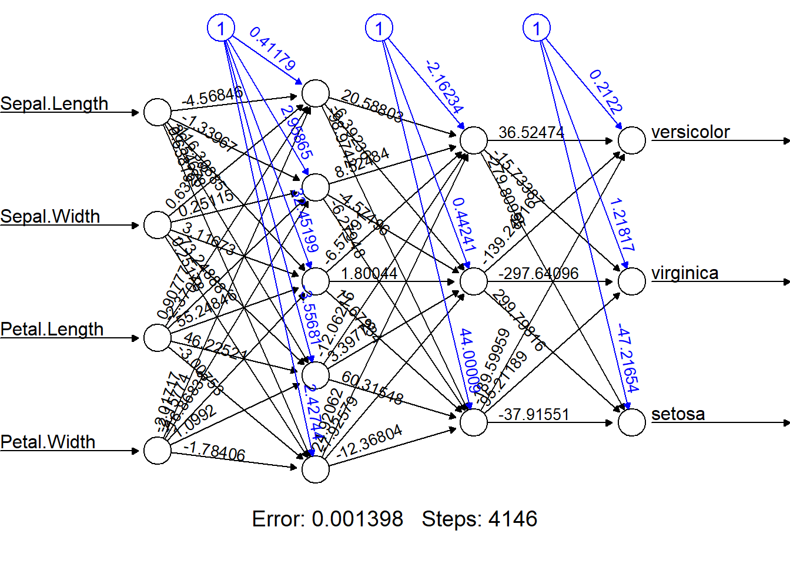
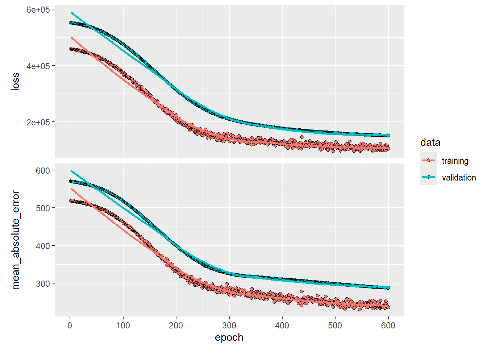
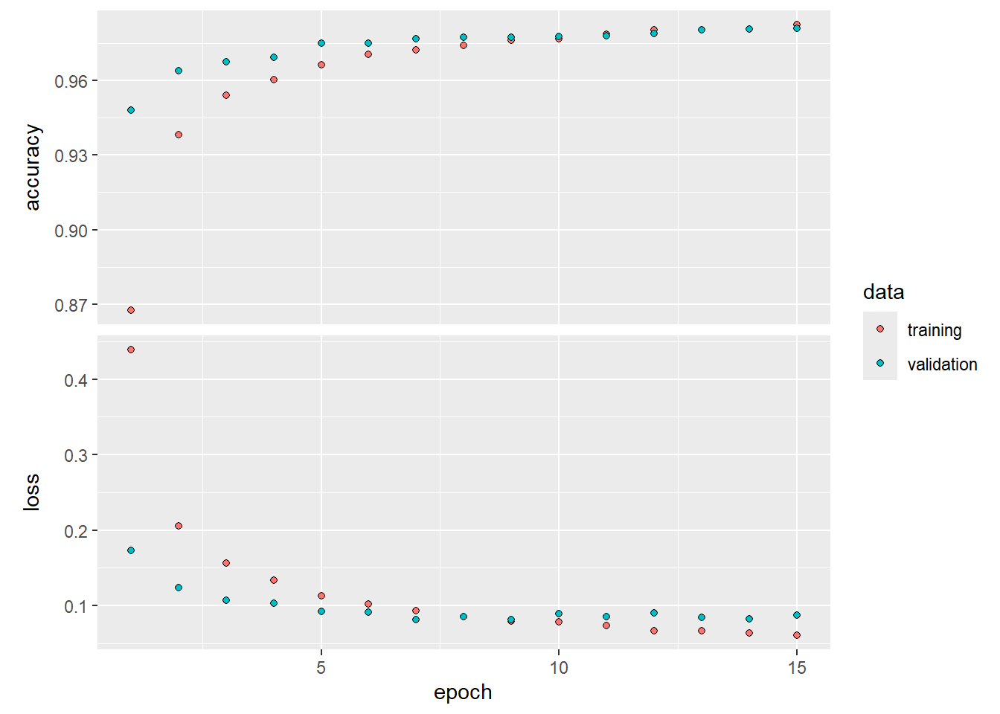
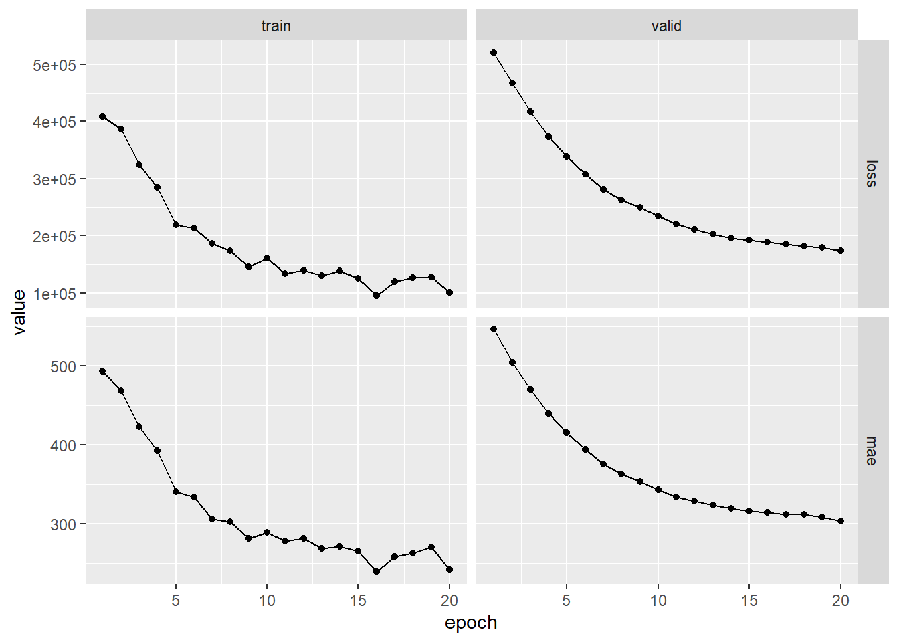
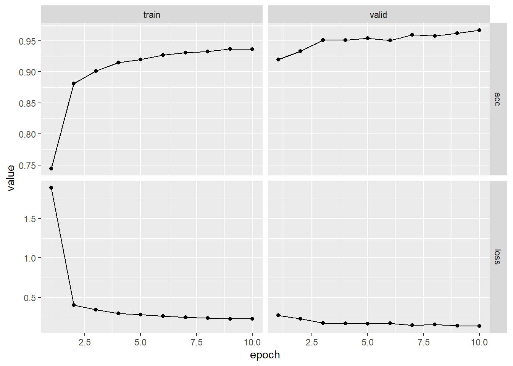

Chapter 10.9.1 and 10.9.2 [ISLR2] An Introduction to Statistical Learning - with Applications in R (2nd Edition). Free access to download the book: https://www.statlearning.com/
To see the help file of a function funcname, type
?funcname.
In this section, we use the keras package, which
interfaces to the tensorflow package which in turn links to
efficient python code. This code is impressively fast, and
the package is well-structured. A good companion is the text Deep
Learning with R (F. Chollet and J.J. Allaire, Deep Learning
with R (2018), Manning Publications.), and most of our code is
adapted from there.
Getting keras up and running on your computer can be a
challenge. The book website <www.statlearning.com> gives
step-by-step instructions on how to achieve this. Guidance can also be
found at <keras.rstudio.com>.
The torch package has become available as an alternative
to the keras package for deep learning. While
torch does not require a python installation,
the current implementation appears to be a fair bit slower than
keras. We include the torch version of the
implementation at the end of this lab.
We’ll start with the classic Boston housing data and build a simple
one-hidden-layer network for regression using the nnet
package.
Load the data:
library(MASS)
data(Boston)
# summary(Boston)Train/test split. We randomly hold out 30% of observations for testing:
set.seed(1)
train <- sample(nrow(Boston), 0.7 * nrow(Boston))
X.train <- subset(Boston[train, ],select=-medv)
y.train <- Boston$medv[train]
X.test <- subset(Boston[-train, ],select=-medv)
y.test <- Boston$medv[-train]Standardize features. Neural nets train more reliably when inputs are on comparable scales. We center/scale using the training statistics and apply the same transformation to the test set:
X.train.mean <- apply(X.train, 2, mean)
X.train.sd <- apply(X.train, 2, sd)
X.train.scaled<-scale(X.train,center=X.train.mean,scale=X.train.sd)
X.test.scaled<-scale(X.test,center=X.train.mean,scale=X.train.sd)
# Boston.train<-data.frame(X.train,medv=y.train)
# Boston.test<-data.frame(X.test,medv=y.test)
Boston.train.scaled<-data.frame(X.train.scaled,medv=y.train)
Boston.test.scaled<-data.frame(X.test.scaled,medv=y.test)
# X.train<-as.matrix(X.train)
X.train.scaled<-as.matrix(X.train.scaled)
# X.test<-as.matrix(X.test)
X.test.scaled<-as.matrix(X.test.scaled)nnet uses sigmoid activation in hidden layers.
For regression, set linout = TRUE to make the
output layer linear.
# install.packages("nnet")
library(nnet)
Boston.nn <- nnet(medv~., data = Boston.train.scaled, size = 2, linout = TRUE)## # weights: 31
## initial value 210723.223600
## iter 10 value 33134.689234
## iter 20 value 13520.804718
## iter 30 value 11208.724886
## iter 40 value 8815.621639
## iter 50 value 7791.757876
## iter 60 value 6507.570716
## iter 70 value 5334.710872
## iter 80 value 4865.174732
## iter 90 value 4080.750719
## iter 100 value 3468.570087
## final value 3468.570087
## stopped after 100 iterationssummary(Boston.nn)## a 13-2-1 network with 31 weights
## options were - linear output units
## b->h1 i1->h1 i2->h1 i3->h1 i4->h1 i5->h1 i6->h1 i7->h1 i8->h1 i9->h1
## -11.64 0.03 2.88 2.18 -0.53 -0.29 -0.87 -2.65 -7.48 4.44
## i10->h1 i11->h1 i12->h1 i13->h1
## 0.25 -2.88 0.90 -5.25
## b->h2 i1->h2 i2->h2 i3->h2 i4->h2 i5->h2 i6->h2 i7->h2 i8->h2 i9->h2
## -1.35 -0.90 -0.01 0.00 0.06 -0.08 0.65 -0.17 -0.12 0.24
## i10->h2 i11->h2 i12->h2 i13->h2
## -0.16 -0.07 0.04 -0.16
## b->o h1->o h2->o
## 11.18 16.93 42.24Boston.nn$value## [1] 3468.57Neural nets have random weight initialization. Different
starts can land in different local minima. A simple strategy is to
repeat training and keep the best (lowest objective value
value):
nn.rep <- function(rep, ...) { # ... means the function takes any number of arguments
v.min <- Inf # initialize v.min
for (r in 1:rep) { # repeat nnet
nn.temp <- nnet(...) # fit the first nnet
v.temp <- nn.temp$value # store the cost
if (v.temp < v.min) { # choose better weights
v.min <- v.temp
nn.min <- nn.temp
}
}
return(nn.min)
}Run the repeated fit and inspect the best model:
set.seed(1)
Boston.nn.rep <- nn.rep(rep = 30, medv ~ ., data = Boston.train.scaled,
size = 2, linout = TRUE, trace = FALSE)
summary(Boston.nn.rep)## a 13-2-1 network with 31 weights
## options were - linear output units
## b->h1 i1->h1 i2->h1 i3->h1 i4->h1 i5->h1 i6->h1 i7->h1 i8->h1 i9->h1
## -1.80 -1.27 0.00 0.05 0.00 0.06 0.54 -0.15 -0.11 0.32
## i10->h1 i11->h1 i12->h1 i13->h1
## -0.25 -0.14 0.12 -0.16
## b->h2 i1->h2 i2->h2 i3->h2 i4->h2 i5->h2 i6->h2 i7->h2 i8->h2 i9->h2
## -7.99 0.07 2.05 1.27 0.30 -1.18 -0.10 -0.44 -4.21 1.44
## i10->h2 i11->h2 i12->h2 i13->h2
## 1.43 -0.75 0.31 -2.17
## b->o h1->o h2->o
## 10.38 56.93 31.84Boston.nn.rep$value## [1] 2523.791Test error (MSE):
Boston.nn.pred <- predict(Boston.nn.rep,Boston.test.scaled)
mean((Boston.nn.pred-y.test)^2)## [1] 26.79806Notes. - size controls hidden units; try larger values
(e.g., 5–10) and add decay (weight decay/L2) to
regularize.
Boston is already numeric).We now switch to classification on the iris
dataset. The setup mirrors the regression case, but we do not
use linout.
Split the data:
data(iris)
# summary(iris)
set.seed(1)
train <- sample(nrow(iris), 0.7 * nrow(iris))
X.train <- subset(iris[train, ],select=-Species)
y.train <- iris$Species[train]
X.test <- subset(iris[-train, ],select=-Species)
y.test <- iris$Species[-train]Standardize features using training statistics:
X.train.mean <- apply(X.train, 2, mean)
X.train.sd <- apply(X.train, 2, sd)
X.train.scaled<-scale(X.train,center=X.train.mean,scale=X.train.sd)
X.test.scaled<-scale(X.test,center=X.train.mean,scale=X.train.sd)
# iris.train<-data.frame(X.train,Species=y.train)
# iris.test<-data.frame(X.test,Species=y.test)
iris.train.scaled<-data.frame(X.train.scaled,Species=y.train)
iris.test.scaled<-data.frame(X.test.scaled,Species=y.test)
# X.train<-as.matrix(X.train)
X.train.scaled<-as.matrix(X.train.scaled)
# X.test<-as.matrix(X.test)
X.test.scaled<-as.matrix(X.test.scaled)Repeated training (same helper as above) to pick a good
initialization. For classification, keep linout = FALSE
(the default), which produces class probabilities:
set.seed(1)
iris.nn.rep <- nn.rep(rep = 30, Species ~ ., data = iris.train.scaled, size = 2, trace = FALSE, linout=FALSE)
summary(iris.nn.rep)## a 4-2-3 network with 19 weights
## options were - softmax modelling
## b->h1 i1->h1 i2->h1 i3->h1 i4->h1
## -1.56 0.19 -0.12 2.90 -1.21
## b->h2 i1->h2 i2->h2 i3->h2 i4->h2
## -125.81 -2.72 -28.91 33.14 133.05
## b->o1 h1->o1 h2->o1
## 47.01 -187.43 -29.28
## b->o2 h1->o2 h2->o2
## 34.62 -16.59 -27.09
## b->o3 h1->o3 h2->o3
## -80.48 202.79 54.53Evaluate classification error:
# iris.nn.pred <- predict(iris.nn.rep, iris.test.scaled, type = "raw") # Predicted "Probability" for each class
iris.nn.pred <- predict(iris.nn.rep, iris.test.scaled, type = "class")
table(iris.nn.pred, y.test)## y.test
## iris.nn.pred setosa versicolor virginica
## setosa 15 1 0
## versicolor 0 16 2
## virginica 0 0 11mean(iris.nn.pred != y.test)## [1] 0.06666667Tips.
Increase size (hidden units) and consider
decay to reduce overfitting.
For imbalanced data, examine per-class error or use confusion matrix metrics (precision/recall).
If you want multiple hidden layers or more control over
activation/error functions, neuralnet is a friendly
option.
# install.packages("neuralnet")
library(neuralnet)
set.seed(1)
iris.neunet.rep <- neuralnet(Species ~ ., data = iris.train.scaled,
hidden = c(5,3), # a vector of numbers of neurons in the hidden layers
rep = 30, # number of repetitions
act.fct = 'logistic', # specify the activation function between 'logistic' and 'tanh'
err.fct = 'ce', # specify the error function between 'sse' (regression)
# and 'ce' (classification)
linear.output = FALSE)
(bestrep<-which.min(iris.neunet.rep$result.matrix["error",]))## [1] 5iris.neunet.rep$weights[[bestrep]]## [[1]]
## [,1] [,2] [,3] [,4] [,5]
## [1,] 0.4117887 2.9586470 32.451994 -3.556813 2.4274417
## [2,] -4.5684625 -1.3396659 -116.308852 36.546779 0.6381863
## [3,] 0.6322789 0.2511534 3.116726 -73.248879 0.2517814
## [4,] 0.9077743 -2.3704994 55.248462 46.225212 -3.0075315
## [5,] -2.0171743 -2.1577388 -16.868377 1.099200 -1.7840616
##
## [[2]]
## [,1] [,2] [,3]
## [1,] -2.162340 0.4424061 44.000090
## [2,] 20.588032 -6.3923569 -98.974198
## [3,] 8.524844 -4.5749584 -6.279478
## [4,] -6.577906 1.8004396 11.672337
## [5,] -12.062149 3.3977818 60.315477
## [6,] 24.920621 -7.9257915 -12.368042
##
## [[3]]
## [,1] [,2] [,3]
## [1,] 0.2121991 1.218173 -47.21654
## [2,] 36.5247393 -15.733870 -279.80955
## [3,] -139.2491605 -297.640961 299.79816
## [4,] -189.5995869 95.211893 -37.91551plot(iris.neunet.rep,rep=bestrep) # Alternatively, plot(iris.neunet.rep,rep="best")
Evaluate on the test set. predict() returns
class probabilities; convert to class labels by argmax and align factor
levels:
iris.neunet.pred.prob <- predict(iris.neunet.rep, iris.test.scaled, rep=bestrep) # Predicted "Probability" for each class
iris.neunet.pred <- as.factor(max.col(iris.neunet.pred.prob))
levels(iris.neunet.pred)<-levels(iris.train.scaled$Species)
table(iris.neunet.pred, y.test)## y.test
## iris.neunet.pred setosa versicolor virginica
## setosa 15 0 0
## versicolor 0 17 3
## virginica 0 0 10mean(iris.neunet.pred != y.test)## [1] 0.06666667Remarks.
hidden accepts a vector for deep networks (e.g.,
c(10, 10, 5)).
For regression with neuralnet, switch to
err.fct = "sse" and
linear.output = TRUE.
Visualization via plot() helps students connect the
algebra to the network topology.
We set up the data, and separate out a training and test set.
library(ISLR2)##
## Attaching package: 'ISLR2'## The following object is masked _by_ '.GlobalEnv':
##
## Boston## The following object is masked from 'package:MASS':
##
## BostonGitters <- na.omit(Hitters)
n <- nrow(Gitters)
set.seed(6805)
ntest <- trunc(n /3)
testid <- sample(1:n, ntest)The linear model should be familiar, but we present it anyway.
lfit <- lm(Salary ~ ., data = Gitters[-testid, ])
lpred <- predict(lfit, Gitters[testid, ])
with(Gitters[testid, ], mean(abs(lpred - Salary)))## [1] 249.4669Notice the use of the with() command: the first argument
is a dataframe, and the second an expression that can refer to elements
of the dataframe by name. In this instance the dataframe corresponds to
the test data and the expression computes the mean absolute prediction
error on this data.
Next we fit the lasso using glmnet. Since this package
does not use formulas, we create x and y
first.
x <- scale(model.matrix(Salary ~ . - 1, data = Gitters))
y <- Gitters$SalaryThe first line makes a call to model.matrix(), which
produces the same matrix that was used by lm() (the
-1 omits the intercept). This function automatically
converts factors to dummy variables. The scale() function
standardizes the matrix so each column has mean zero and variance
one.
library(glmnet)## Loading required package: Matrix## Loaded glmnet 4.1-10cvfit <- cv.glmnet(x[-testid, ], y[-testid], type.measure = "mae")
cpred <- predict(cvfit, x[testid, ], s = "lambda.min")
mean(abs(y[testid] - cpred))## [1] 251.122To fit the neural network, we first set up a model structure that describes the network.
# install.packages("keras3") # Uncomment to Run it for the first time
# install.packages("reticulate") # Uncomment to Run it for the first time
library(reticulate)
use_condaenv("r-reticulate", required = TRUE)
library(keras3)
# install_keras(method = "conda", envname = "r-reticulate") # Uncomment to Run it for the first time
modnn <- keras_model_sequential() |>
layer_dense(units = 50, activation = "relu", input_shape = ncol(x)) |>
layer_dropout(rate = 0.4) |>
layer_dense(units = 1)We have created a vanilla model object called modnn, and
have added details about the successive layers in a sequential manner,
using the function keras_model_sequential(). The
pipe operator \%>\% passes the previous term as
the first argument to the next function, and returns the result. It
allows us to specify the layers of a neural network in a readable
form.
We illustrate the use of the pipe operator on a simple example.
Earlier, we created x using the command
x <- scale(model.matrix(Salary ~ . - 1, data = Gitters))We first make a matrix, and then we center each of the variables. Compound expressions like this can be difficult to parse. We could have obtained the same result using the pipe operator:
x <- model.matrix(Salary ~ . - 1, data = Gitters) |> scale()Using the pipe operator makes it easier to follow the sequence of operations.
We now return to our neural network. The object modnn
has a single hidden layer with 50 hidden units, and a ReLU activation
function. It then has a dropout layer, in which a random 40% of the 50
activations from the previous layer are set to zero during each
iteration of the stochastic gradient descent algorithm. Finally, the
output layer has just one unit with no activation function, indicating
that the model provides a single quantitative output.
Next we add details to modnn that control the fitting
algorithm. Here we have simply followed the examples given in the Keras
book. We minimize squared-error loss. The algorithm tracks the mean
absolute error on the training data, and on validation data if it is
supplied.
modnn |> compile(loss = "mse",
optimizer = optimizer_rmsprop(),
metrics = list("mean_absolute_error")
)In the previous line, the pipe operator passes modnn as
the first argument to compile(). The compile()
function does not actually change the R object
modnn, but it does communicate these specifications to the
corresponding python instance of this model that has been
created along the way.
Now we fit the model. We supply the training data and two fitting
parameters, epochs and batch_size. Using 32
for the latter means that at each step of SGD, the algorithm randomly
selects 32 training observations for the computation of the gradient. An
epoch amounts to the number of SGD steps required to process \(n\) observations. Since the training set
has \(n=176\), an epoch is 176/32=5.5
SGD steps. The fit() function has an argument
validation_data; these data are not used in the fitting,
but can be used to track the progress of the model (in this case
reporting the mean absolute error). Here we actually supply the test
data so we can see the mean absolute error of both the training data and
test data as the epochs proceed. To see more options for fitting, use
?fit.keras.engine.training.Model.
history <- modnn |> fit(
# x[-testid, ], y[-testid], epochs = 1500, batch_size = 32,
x[-testid, ],
y[-testid],
epochs = 600,
batch_size = 32,
validation_data = list(x[testid, ], y[testid])
)## Epoch 1/600
## 6/6 - 2s - 296ms/step - loss: 458946.1875 - mean_absolute_error: 518.6953 - val_loss: 552169.8750 - val_mean_absolute_error: 570.1128
## Epoch 2/600
## 6/6 - 0s - 35ms/step - loss: 458392.0938 - mean_absolute_error: 518.3130 - val_loss: 551832.6250 - val_mean_absolute_error: 569.8752
## Epoch 3/600
## 6/6 - 0s - 32ms/step - loss: 457847.6875 - mean_absolute_error: 517.9752 - val_loss: 551536.4375 - val_mean_absolute_error: 569.6611
## Epoch 4/600
## 6/6 - 0s - 29ms/step - loss: 457829.9688 - mean_absolute_error: 517.8887 - val_loss: 551253.0000 - val_mean_absolute_error: 569.4631
## Epoch 5/600
## 6/6 - 0s - 26ms/step - loss: 457448.3125 - mean_absolute_error: 517.7520 - val_loss: 550968.3750 - val_mean_absolute_error: 569.2639
## Epoch 6/600
## 6/6 - 0s - 34ms/step - loss: 457125.9688 - mean_absolute_error: 517.3276 - val_loss: 550676.5000 - val_mean_absolute_error: 569.0547
## Epoch 7/600
## 6/6 - 0s - 26ms/step - loss: 456854.6250 - mean_absolute_error: 517.2261 - val_loss: 550384.4375 - val_mean_absolute_error: 568.8483
## Epoch 8/600
## 6/6 - 0s - 26ms/step - loss: 456639.7188 - mean_absolute_error: 517.0445 - val_loss: 550097.5000 - val_mean_absolute_error: 568.6469
## Epoch 9/600
## 6/6 - 0s - 34ms/step - loss: 456269.9062 - mean_absolute_error: 516.8252 - val_loss: 549798.7500 - val_mean_absolute_error: 568.4366
## Epoch 10/600
## 6/6 - 0s - 32ms/step - loss: 455941.4062 - mean_absolute_error: 516.5567 - val_loss: 549475.2500 - val_mean_absolute_error: 568.2109
## Epoch 11/600
## 6/6 - 0s - 26ms/step - loss: 455596.6250 - mean_absolute_error: 516.4063 - val_loss: 549166.1875 - val_mean_absolute_error: 567.9956
## Epoch 12/600
## 6/6 - 0s - 26ms/step - loss: 455298.1250 - mean_absolute_error: 516.2139 - val_loss: 548811.0625 - val_mean_absolute_error: 567.7536
## Epoch 13/600
## 6/6 - 0s - 32ms/step - loss: 455002.8125 - mean_absolute_error: 515.9779 - val_loss: 548487.0000 - val_mean_absolute_error: 567.5315
## Epoch 14/600
## 6/6 - 0s - 26ms/step - loss: 454419.0000 - mean_absolute_error: 515.5842 - val_loss: 548157.3125 - val_mean_absolute_error: 567.3008
## Epoch 15/600
## 6/6 - 0s - 26ms/step - loss: 453901.2812 - mean_absolute_error: 515.2736 - val_loss: 547776.8125 - val_mean_absolute_error: 567.0395
## Epoch 16/600
## 6/6 - 0s - 26ms/step - loss: 453331.6875 - mean_absolute_error: 514.9623 - val_loss: 547407.8125 - val_mean_absolute_error: 566.7922
## Epoch 17/600
## 6/6 - 0s - 26ms/step - loss: 452883.4062 - mean_absolute_error: 514.6185 - val_loss: 547050.4375 - val_mean_absolute_error: 566.5505
## Epoch 18/600
## 6/6 - 0s - 34ms/step - loss: 452952.5000 - mean_absolute_error: 514.5554 - val_loss: 546702.5625 - val_mean_absolute_error: 566.3096
## Epoch 19/600
## 6/6 - 0s - 26ms/step - loss: 452458.6250 - mean_absolute_error: 514.1993 - val_loss: 546318.6875 - val_mean_absolute_error: 566.0486
## Epoch 20/600
## 6/6 - 0s - 24ms/step - loss: 452144.4062 - mean_absolute_error: 514.1357 - val_loss: 545910.8750 - val_mean_absolute_error: 565.7813
## Epoch 21/600
## 6/6 - 0s - 26ms/step - loss: 451620.1875 - mean_absolute_error: 513.8369 - val_loss: 545475.7500 - val_mean_absolute_error: 565.4941
## Epoch 22/600
## 6/6 - 0s - 37ms/step - loss: 450919.7812 - mean_absolute_error: 513.2852 - val_loss: 545031.0625 - val_mean_absolute_error: 565.2039
## Epoch 23/600
## 6/6 - 0s - 27ms/step - loss: 450805.5000 - mean_absolute_error: 513.2891 - val_loss: 544635.9375 - val_mean_absolute_error: 564.9370
## Epoch 24/600
## 6/6 - 0s - 25ms/step - loss: 450722.7188 - mean_absolute_error: 512.9736 - val_loss: 544225.6250 - val_mean_absolute_error: 564.6625
## Epoch 25/600
## 6/6 - 0s - 30ms/step - loss: 449144.7188 - mean_absolute_error: 512.2834 - val_loss: 543729.0625 - val_mean_absolute_error: 564.3419
## Epoch 26/600
## 6/6 - 0s - 28ms/step - loss: 449057.5000 - mean_absolute_error: 512.1181 - val_loss: 543314.8750 - val_mean_absolute_error: 564.0643
## Epoch 27/600
## 6/6 - 0s - 28ms/step - loss: 448766.1875 - mean_absolute_error: 511.8867 - val_loss: 542858.1875 - val_mean_absolute_error: 563.7587
## Epoch 28/600
## 6/6 - 0s - 25ms/step - loss: 447987.9062 - mean_absolute_error: 511.4704 - val_loss: 542382.1875 - val_mean_absolute_error: 563.4529
## Epoch 29/600
## 6/6 - 0s - 24ms/step - loss: 448023.9062 - mean_absolute_error: 511.2906 - val_loss: 541875.6250 - val_mean_absolute_error: 563.1292
## Epoch 30/600
## 6/6 - 0s - 30ms/step - loss: 447051.7188 - mean_absolute_error: 510.8160 - val_loss: 541420.6875 - val_mean_absolute_error: 562.8301
## Epoch 31/600
## 6/6 - 0s - 30ms/step - loss: 445982.1250 - mean_absolute_error: 510.3540 - val_loss: 540862.8750 - val_mean_absolute_error: 562.4717
## Epoch 32/600
## 6/6 - 0s - 29ms/step - loss: 445861.0938 - mean_absolute_error: 510.1907 - val_loss: 540374.3750 - val_mean_absolute_error: 562.1484
## Epoch 33/600
## 6/6 - 0s - 29ms/step - loss: 445361.9062 - mean_absolute_error: 509.7282 - val_loss: 539860.0000 - val_mean_absolute_error: 561.8151
## Epoch 34/600
## 6/6 - 0s - 28ms/step - loss: 445244.6250 - mean_absolute_error: 509.3964 - val_loss: 539323.8750 - val_mean_absolute_error: 561.4665
## Epoch 35/600
## 6/6 - 0s - 28ms/step - loss: 444310.8750 - mean_absolute_error: 509.3778 - val_loss: 538787.7500 - val_mean_absolute_error: 561.1185
## Epoch 36/600
## 6/6 - 0s - 27ms/step - loss: 443904.0938 - mean_absolute_error: 508.9463 - val_loss: 538223.5000 - val_mean_absolute_error: 560.7538
## Epoch 37/600
## 6/6 - 0s - 31ms/step - loss: 443519.2812 - mean_absolute_error: 508.5049 - val_loss: 537633.8125 - val_mean_absolute_error: 560.3691
## Epoch 38/600
## 6/6 - 0s - 28ms/step - loss: 442098.4688 - mean_absolute_error: 507.9623 - val_loss: 537025.9375 - val_mean_absolute_error: 559.9790
## Epoch 39/600
## 6/6 - 0s - 29ms/step - loss: 441563.3750 - mean_absolute_error: 507.5254 - val_loss: 536415.3750 - val_mean_absolute_error: 559.5836
## Epoch 40/600
## 6/6 - 0s - 30ms/step - loss: 440850.9688 - mean_absolute_error: 506.9244 - val_loss: 535759.1250 - val_mean_absolute_error: 559.1637
## Epoch 41/600
## 6/6 - 0s - 28ms/step - loss: 440127.5312 - mean_absolute_error: 506.3953 - val_loss: 535146.1875 - val_mean_absolute_error: 558.7677
## Epoch 42/600
## 6/6 - 0s - 32ms/step - loss: 439685.0938 - mean_absolute_error: 506.2233 - val_loss: 534522.5625 - val_mean_absolute_error: 558.3595
## Epoch 43/600
## 6/6 - 0s - 29ms/step - loss: 438546.0938 - mean_absolute_error: 505.5490 - val_loss: 533837.6875 - val_mean_absolute_error: 557.9202
## Epoch 44/600
## 6/6 - 0s - 52ms/step - loss: 438232.9688 - mean_absolute_error: 505.5061 - val_loss: 533131.6250 - val_mean_absolute_error: 557.4690
## Epoch 45/600
## 6/6 - 0s - 31ms/step - loss: 436932.7812 - mean_absolute_error: 504.6131 - val_loss: 532459.9375 - val_mean_absolute_error: 557.0349
## Epoch 46/600
## 6/6 - 0s - 29ms/step - loss: 436435.6875 - mean_absolute_error: 504.2186 - val_loss: 531767.8125 - val_mean_absolute_error: 556.5894
## Epoch 47/600
## 6/6 - 0s - 24ms/step - loss: 435947.8125 - mean_absolute_error: 503.9508 - val_loss: 531086.3125 - val_mean_absolute_error: 556.1437
## Epoch 48/600
## 6/6 - 0s - 28ms/step - loss: 434761.8750 - mean_absolute_error: 503.6093 - val_loss: 530373.8125 - val_mean_absolute_error: 555.6835
## Epoch 49/600
## 6/6 - 0s - 25ms/step - loss: 434560.0312 - mean_absolute_error: 502.9698 - val_loss: 529691.6875 - val_mean_absolute_error: 555.2390
## Epoch 50/600
## 6/6 - 0s - 21ms/step - loss: 433316.8125 - mean_absolute_error: 502.5219 - val_loss: 528916.1250 - val_mean_absolute_error: 554.7457
## Epoch 51/600
## 6/6 - 0s - 14ms/step - loss: 432484.3750 - mean_absolute_error: 501.6558 - val_loss: 528144.9375 - val_mean_absolute_error: 554.2463
## Epoch 52/600
## 6/6 - 0s - 13ms/step - loss: 431854.8750 - mean_absolute_error: 501.0738 - val_loss: 527424.6250 - val_mean_absolute_error: 553.7753
## Epoch 53/600
## 6/6 - 0s - 14ms/step - loss: 430350.2812 - mean_absolute_error: 500.4492 - val_loss: 526598.8750 - val_mean_absolute_error: 553.2446
## Epoch 54/600
## 6/6 - 0s - 14ms/step - loss: 429701.6250 - mean_absolute_error: 500.1991 - val_loss: 525804.5000 - val_mean_absolute_error: 552.7300
## Epoch 55/600
## 6/6 - 0s - 15ms/step - loss: 430221.3750 - mean_absolute_error: 500.0993 - val_loss: 524995.1875 - val_mean_absolute_error: 552.1983
## Epoch 56/600
## 6/6 - 0s - 15ms/step - loss: 427360.0938 - mean_absolute_error: 498.7451 - val_loss: 524091.5938 - val_mean_absolute_error: 551.6180
## Epoch 57/600
## 6/6 - 0s - 14ms/step - loss: 426557.0938 - mean_absolute_error: 498.1334 - val_loss: 523282.0312 - val_mean_absolute_error: 551.0812
## Epoch 58/600
## 6/6 - 0s - 15ms/step - loss: 424485.4062 - mean_absolute_error: 497.2840 - val_loss: 522360.4688 - val_mean_absolute_error: 550.4897
## Epoch 59/600
## 6/6 - 0s - 11ms/step - loss: 423668.1250 - mean_absolute_error: 496.0504 - val_loss: 521502.4688 - val_mean_absolute_error: 549.9224
## Epoch 60/600
## 6/6 - 0s - 14ms/step - loss: 424154.8750 - mean_absolute_error: 496.0695 - val_loss: 520655.1250 - val_mean_absolute_error: 549.3561
## Epoch 61/600
## 6/6 - 0s - 14ms/step - loss: 424922.7188 - mean_absolute_error: 496.3159 - val_loss: 519778.5625 - val_mean_absolute_error: 548.7790
## Epoch 62/600
## 6/6 - 0s - 14ms/step - loss: 422049.1875 - mean_absolute_error: 495.3461 - val_loss: 518881.1562 - val_mean_absolute_error: 548.1874
## Epoch 63/600
## 6/6 - 0s - 14ms/step - loss: 421428.0000 - mean_absolute_error: 494.7491 - val_loss: 517905.5625 - val_mean_absolute_error: 547.5438
## Epoch 64/600
## 6/6 - 0s - 13ms/step - loss: 421665.5000 - mean_absolute_error: 494.4615 - val_loss: 517043.6875 - val_mean_absolute_error: 546.9680
## Epoch 65/600
## 6/6 - 0s - 13ms/step - loss: 420076.7812 - mean_absolute_error: 493.9616 - val_loss: 516066.9375 - val_mean_absolute_error: 546.3265
## Epoch 66/600
## 6/6 - 0s - 13ms/step - loss: 417680.3750 - mean_absolute_error: 492.2430 - val_loss: 515098.4375 - val_mean_absolute_error: 545.6843
## Epoch 67/600
## 6/6 - 0s - 13ms/step - loss: 417551.9062 - mean_absolute_error: 491.5095 - val_loss: 514105.3438 - val_mean_absolute_error: 545.0240
## Epoch 68/600
## 6/6 - 0s - 13ms/step - loss: 415604.6875 - mean_absolute_error: 491.5431 - val_loss: 513078.3438 - val_mean_absolute_error: 544.3452
## Epoch 69/600
## 6/6 - 0s - 11ms/step - loss: 414184.9688 - mean_absolute_error: 490.4554 - val_loss: 512041.6562 - val_mean_absolute_error: 543.6469
## Epoch 70/600
## 6/6 - 0s - 14ms/step - loss: 413473.9062 - mean_absolute_error: 490.3125 - val_loss: 511126.8438 - val_mean_absolute_error: 543.0106
## Epoch 71/600
## 6/6 - 0s - 14ms/step - loss: 413341.5312 - mean_absolute_error: 489.4270 - val_loss: 510154.8438 - val_mean_absolute_error: 542.3596
## Epoch 72/600
## 6/6 - 0s - 14ms/step - loss: 409914.9688 - mean_absolute_error: 487.5724 - val_loss: 509075.8750 - val_mean_absolute_error: 541.6322
## Epoch 73/600
## 6/6 - 0s - 14ms/step - loss: 409978.3125 - mean_absolute_error: 486.5232 - val_loss: 508020.0938 - val_mean_absolute_error: 540.9245
## Epoch 74/600
## 6/6 - 0s - 14ms/step - loss: 410138.1250 - mean_absolute_error: 486.9265 - val_loss: 506935.9688 - val_mean_absolute_error: 540.1891
## Epoch 75/600
## 6/6 - 0s - 15ms/step - loss: 405986.3125 - mean_absolute_error: 484.5347 - val_loss: 505803.0938 - val_mean_absolute_error: 539.4255
## Epoch 76/600
## 6/6 - 0s - 14ms/step - loss: 408325.8125 - mean_absolute_error: 485.9024 - val_loss: 504765.5312 - val_mean_absolute_error: 538.7177
## Epoch 77/600
## 6/6 - 0s - 14ms/step - loss: 403022.5312 - mean_absolute_error: 482.8447 - val_loss: 503589.8438 - val_mean_absolute_error: 537.9249
## Epoch 78/600
## 6/6 - 0s - 15ms/step - loss: 405185.1250 - mean_absolute_error: 483.4066 - val_loss: 502465.4375 - val_mean_absolute_error: 537.1617
## Epoch 79/600
## 6/6 - 0s - 13ms/step - loss: 401313.6875 - mean_absolute_error: 482.1296 - val_loss: 501318.9375 - val_mean_absolute_error: 536.3750
## Epoch 80/600
## 6/6 - 0s - 14ms/step - loss: 402370.2812 - mean_absolute_error: 482.1349 - val_loss: 500221.8750 - val_mean_absolute_error: 535.6119
## Epoch 81/600
## 6/6 - 0s - 14ms/step - loss: 398704.6250 - mean_absolute_error: 480.1235 - val_loss: 499130.9062 - val_mean_absolute_error: 534.8541
## Epoch 82/600
## 6/6 - 0s - 14ms/step - loss: 398525.3125 - mean_absolute_error: 480.3986 - val_loss: 497943.6250 - val_mean_absolute_error: 534.0358
## Epoch 83/600
## 6/6 - 0s - 16ms/step - loss: 396516.6250 - mean_absolute_error: 478.7534 - val_loss: 496783.2500 - val_mean_absolute_error: 533.2380
## Epoch 84/600
## 6/6 - 0s - 14ms/step - loss: 398100.8125 - mean_absolute_error: 478.6421 - val_loss: 495537.4375 - val_mean_absolute_error: 532.3840
## Epoch 85/600
## 6/6 - 0s - 14ms/step - loss: 396791.9062 - mean_absolute_error: 478.6367 - val_loss: 494256.4062 - val_mean_absolute_error: 531.5029
## Epoch 86/600
## 6/6 - 0s - 14ms/step - loss: 391757.8125 - mean_absolute_error: 475.4269 - val_loss: 493043.9688 - val_mean_absolute_error: 530.6546
## Epoch 87/600
## 6/6 - 0s - 14ms/step - loss: 392053.3125 - mean_absolute_error: 475.0470 - val_loss: 491810.5312 - val_mean_absolute_error: 529.7939
## Epoch 88/600
## 6/6 - 0s - 14ms/step - loss: 389594.7812 - mean_absolute_error: 474.6578 - val_loss: 490666.1562 - val_mean_absolute_error: 528.9769
## Epoch 89/600
## 6/6 - 0s - 13ms/step - loss: 387417.5938 - mean_absolute_error: 472.6625 - val_loss: 489336.1250 - val_mean_absolute_error: 528.0538
## Epoch 90/600
## 6/6 - 0s - 14ms/step - loss: 390202.4062 - mean_absolute_error: 473.7707 - val_loss: 488103.3438 - val_mean_absolute_error: 527.1797
## Epoch 91/600
## 6/6 - 0s - 14ms/step - loss: 386942.0312 - mean_absolute_error: 472.0231 - val_loss: 486838.9375 - val_mean_absolute_error: 526.2971
## Epoch 92/600
## 6/6 - 0s - 16ms/step - loss: 386031.6875 - mean_absolute_error: 470.5314 - val_loss: 485699.0000 - val_mean_absolute_error: 525.4762
## Epoch 93/600
## 6/6 - 0s - 14ms/step - loss: 382780.9062 - mean_absolute_error: 469.7054 - val_loss: 484445.6875 - val_mean_absolute_error: 524.5807
## Epoch 94/600
## 6/6 - 0s - 14ms/step - loss: 386006.3125 - mean_absolute_error: 469.6402 - val_loss: 483253.8750 - val_mean_absolute_error: 523.7224
## Epoch 95/600
## 6/6 - 0s - 14ms/step - loss: 377084.4688 - mean_absolute_error: 466.2520 - val_loss: 481934.7188 - val_mean_absolute_error: 522.7866
## Epoch 96/600
## 6/6 - 0s - 14ms/step - loss: 380955.2188 - mean_absolute_error: 466.0155 - val_loss: 480650.2500 - val_mean_absolute_error: 521.8643
## Epoch 97/600
## 6/6 - 0s - 14ms/step - loss: 377492.0938 - mean_absolute_error: 465.8222 - val_loss: 479277.1562 - val_mean_absolute_error: 520.8922
## Epoch 98/600
## 6/6 - 0s - 15ms/step - loss: 377039.4688 - mean_absolute_error: 464.1543 - val_loss: 477913.1875 - val_mean_absolute_error: 519.9140
## Epoch 99/600
## 6/6 - 0s - 12ms/step - loss: 375608.5312 - mean_absolute_error: 463.9689 - val_loss: 476577.3750 - val_mean_absolute_error: 518.9529
## Epoch 100/600
## 6/6 - 0s - 14ms/step - loss: 375599.8750 - mean_absolute_error: 462.4187 - val_loss: 475239.1875 - val_mean_absolute_error: 517.9866
## Epoch 101/600
## 6/6 - 0s - 14ms/step - loss: 365954.6875 - mean_absolute_error: 458.3965 - val_loss: 473827.1250 - val_mean_absolute_error: 516.9731
## Epoch 102/600
## 6/6 - 0s - 13ms/step - loss: 370476.2188 - mean_absolute_error: 459.4300 - val_loss: 472391.1875 - val_mean_absolute_error: 515.9398
## Epoch 103/600
## 6/6 - 0s - 13ms/step - loss: 368684.7812 - mean_absolute_error: 458.3289 - val_loss: 471088.6562 - val_mean_absolute_error: 514.9627
## Epoch 104/600
## 6/6 - 0s - 14ms/step - loss: 363012.7188 - mean_absolute_error: 455.8483 - val_loss: 469572.9062 - val_mean_absolute_error: 513.8713
## Epoch 105/600
## 6/6 - 0s - 17ms/step - loss: 366691.4688 - mean_absolute_error: 456.9751 - val_loss: 468263.5000 - val_mean_absolute_error: 512.9109
## Epoch 106/600
## 6/6 - 0s - 13ms/step - loss: 363308.6875 - mean_absolute_error: 454.7960 - val_loss: 466832.2812 - val_mean_absolute_error: 511.8624
## Epoch 107/600
## 6/6 - 0s - 15ms/step - loss: 362371.4062 - mean_absolute_error: 455.4868 - val_loss: 465444.2188 - val_mean_absolute_error: 510.8388
## Epoch 108/600
## 6/6 - 0s - 15ms/step - loss: 360783.6250 - mean_absolute_error: 452.2340 - val_loss: 464021.4375 - val_mean_absolute_error: 509.7779
## Epoch 109/600
## 6/6 - 0s - 14ms/step - loss: 358641.2812 - mean_absolute_error: 450.9695 - val_loss: 462590.5312 - val_mean_absolute_error: 508.7292
## Epoch 110/600
## 6/6 - 0s - 31ms/step - loss: 360464.2188 - mean_absolute_error: 452.3953 - val_loss: 461197.6562 - val_mean_absolute_error: 507.7027
## Epoch 111/600
## 6/6 - 0s - 15ms/step - loss: 357655.2500 - mean_absolute_error: 450.7024 - val_loss: 459716.5000 - val_mean_absolute_error: 506.6176
## Epoch 112/600
## 6/6 - 0s - 14ms/step - loss: 354454.0312 - mean_absolute_error: 448.5327 - val_loss: 458216.3125 - val_mean_absolute_error: 505.5015
## Epoch 113/600
## 6/6 - 0s - 13ms/step - loss: 355091.2812 - mean_absolute_error: 447.7880 - val_loss: 456728.7500 - val_mean_absolute_error: 504.3839
## Epoch 114/600
## 6/6 - 0s - 13ms/step - loss: 354905.0000 - mean_absolute_error: 445.9833 - val_loss: 455175.1875 - val_mean_absolute_error: 503.2195
## Epoch 115/600
## 6/6 - 0s - 13ms/step - loss: 353344.0312 - mean_absolute_error: 444.8667 - val_loss: 453666.4375 - val_mean_absolute_error: 502.0733
## Epoch 116/600
## 6/6 - 0s - 14ms/step - loss: 351925.6250 - mean_absolute_error: 442.7484 - val_loss: 452156.1250 - val_mean_absolute_error: 500.9417
## Epoch 117/600
## 6/6 - 0s - 11ms/step - loss: 350407.3125 - mean_absolute_error: 444.2666 - val_loss: 450596.8750 - val_mean_absolute_error: 499.7899
## Epoch 118/600
## 6/6 - 0s - 11ms/step - loss: 342720.7812 - mean_absolute_error: 440.7201 - val_loss: 449060.5625 - val_mean_absolute_error: 498.6983
## Epoch 119/600
## 6/6 - 0s - 14ms/step - loss: 344094.5938 - mean_absolute_error: 439.7959 - val_loss: 447485.1562 - val_mean_absolute_error: 497.5953
## Epoch 120/600
## 6/6 - 0s - 11ms/step - loss: 338939.0312 - mean_absolute_error: 438.2819 - val_loss: 445923.3125 - val_mean_absolute_error: 496.4872
## Epoch 121/600
## 6/6 - 0s - 14ms/step - loss: 339900.1250 - mean_absolute_error: 437.0230 - val_loss: 444285.5938 - val_mean_absolute_error: 495.3326
## Epoch 122/600
## 6/6 - 0s - 14ms/step - loss: 341324.9375 - mean_absolute_error: 437.1483 - val_loss: 442800.6562 - val_mean_absolute_error: 494.2559
## Epoch 123/600
## 6/6 - 0s - 14ms/step - loss: 340745.7812 - mean_absolute_error: 437.0692 - val_loss: 441212.4062 - val_mean_absolute_error: 493.1184
## Epoch 124/600
## 6/6 - 0s - 13ms/step - loss: 337401.3750 - mean_absolute_error: 434.2240 - val_loss: 439657.6562 - val_mean_absolute_error: 491.9816
## Epoch 125/600
## 6/6 - 0s - 14ms/step - loss: 339363.7500 - mean_absolute_error: 433.8099 - val_loss: 438112.4062 - val_mean_absolute_error: 490.8623
## Epoch 126/600
## 6/6 - 0s - 12ms/step - loss: 331757.0625 - mean_absolute_error: 430.6270 - val_loss: 436472.1875 - val_mean_absolute_error: 489.6757
## Epoch 127/600
## 6/6 - 0s - 12ms/step - loss: 325602.7188 - mean_absolute_error: 427.4795 - val_loss: 434949.4375 - val_mean_absolute_error: 488.5722
## Epoch 128/600
## 6/6 - 0s - 15ms/step - loss: 327715.0625 - mean_absolute_error: 427.1484 - val_loss: 433367.8750 - val_mean_absolute_error: 487.4161
## Epoch 129/600
## 6/6 - 0s - 13ms/step - loss: 328155.5312 - mean_absolute_error: 426.9669 - val_loss: 431864.4062 - val_mean_absolute_error: 486.2894
## Epoch 130/600
## 6/6 - 0s - 13ms/step - loss: 325322.6562 - mean_absolute_error: 425.2913 - val_loss: 430272.5625 - val_mean_absolute_error: 485.1025
## Epoch 131/600
## 6/6 - 0s - 12ms/step - loss: 318270.7188 - mean_absolute_error: 422.6761 - val_loss: 428516.5938 - val_mean_absolute_error: 483.8344
## Epoch 132/600
## 6/6 - 0s - 28ms/step - loss: 323455.8438 - mean_absolute_error: 423.0066 - val_loss: 426992.3125 - val_mean_absolute_error: 482.6860
## Epoch 133/600
## 6/6 - 0s - 14ms/step - loss: 317368.0312 - mean_absolute_error: 420.8069 - val_loss: 425320.1875 - val_mean_absolute_error: 481.4468
## Epoch 134/600
## 6/6 - 0s - 13ms/step - loss: 321638.4062 - mean_absolute_error: 422.0450 - val_loss: 423753.0000 - val_mean_absolute_error: 480.2676
## Epoch 135/600
## 6/6 - 0s - 16ms/step - loss: 323756.9062 - mean_absolute_error: 421.5210 - val_loss: 422112.8750 - val_mean_absolute_error: 479.0214
## Epoch 136/600
## 6/6 - 0s - 15ms/step - loss: 314270.8750 - mean_absolute_error: 416.5016 - val_loss: 420482.6562 - val_mean_absolute_error: 477.8007
## Epoch 137/600
## 6/6 - 0s - 26ms/step - loss: 311684.2812 - mean_absolute_error: 414.8730 - val_loss: 418730.6562 - val_mean_absolute_error: 476.4786
## Epoch 138/600
## 6/6 - 0s - 14ms/step - loss: 312365.3125 - mean_absolute_error: 414.6854 - val_loss: 416990.1562 - val_mean_absolute_error: 475.1516
## Epoch 139/600
## 6/6 - 0s - 11ms/step - loss: 308586.7812 - mean_absolute_error: 411.7943 - val_loss: 415366.3438 - val_mean_absolute_error: 473.9509
## Epoch 140/600
## 6/6 - 0s - 13ms/step - loss: 305951.6875 - mean_absolute_error: 411.2789 - val_loss: 413593.5625 - val_mean_absolute_error: 472.6423
## Epoch 141/600
## 6/6 - 0s - 12ms/step - loss: 307747.9688 - mean_absolute_error: 410.5218 - val_loss: 411982.0625 - val_mean_absolute_error: 471.4239
## Epoch 142/600
## 6/6 - 0s - 13ms/step - loss: 311628.6875 - mean_absolute_error: 412.6497 - val_loss: 410382.8125 - val_mean_absolute_error: 470.2161
## Epoch 143/600
## 6/6 - 0s - 16ms/step - loss: 300008.8750 - mean_absolute_error: 406.5654 - val_loss: 408678.6250 - val_mean_absolute_error: 468.9367
## Epoch 144/600
## 6/6 - 0s - 13ms/step - loss: 300279.7188 - mean_absolute_error: 407.6803 - val_loss: 406948.0000 - val_mean_absolute_error: 467.6620
## Epoch 145/600
## 6/6 - 0s - 13ms/step - loss: 304856.2188 - mean_absolute_error: 408.7674 - val_loss: 405241.1562 - val_mean_absolute_error: 466.3972
## Epoch 146/600
## 6/6 - 0s - 15ms/step - loss: 293925.1250 - mean_absolute_error: 401.9183 - val_loss: 403513.3750 - val_mean_absolute_error: 465.1108
## Epoch 147/600
## 6/6 - 0s - 14ms/step - loss: 295298.6562 - mean_absolute_error: 403.0829 - val_loss: 401809.3438 - val_mean_absolute_error: 463.8440
## Epoch 148/600
## 6/6 - 0s - 14ms/step - loss: 296231.2188 - mean_absolute_error: 403.8439 - val_loss: 400011.2188 - val_mean_absolute_error: 462.5107
## Epoch 149/600
## 6/6 - 0s - 11ms/step - loss: 298715.4375 - mean_absolute_error: 402.9732 - val_loss: 398334.9375 - val_mean_absolute_error: 461.2744
## Epoch 150/600
## 6/6 - 0s - 12ms/step - loss: 295354.9375 - mean_absolute_error: 401.5885 - val_loss: 396592.1250 - val_mean_absolute_error: 459.9986
## Epoch 151/600
## 6/6 - 0s - 11ms/step - loss: 289047.3750 - mean_absolute_error: 397.5491 - val_loss: 394966.0625 - val_mean_absolute_error: 458.8062
## Epoch 152/600
## 6/6 - 0s - 16ms/step - loss: 292339.2188 - mean_absolute_error: 395.7067 - val_loss: 393317.1562 - val_mean_absolute_error: 457.5824
## Epoch 153/600
## 6/6 - 0s - 15ms/step - loss: 282076.2500 - mean_absolute_error: 394.3325 - val_loss: 391563.4375 - val_mean_absolute_error: 456.2992
## Epoch 154/600
## 6/6 - 0s - 14ms/step - loss: 283498.8125 - mean_absolute_error: 393.3623 - val_loss: 389759.5000 - val_mean_absolute_error: 454.9849
## Epoch 155/600
## 6/6 - 0s - 16ms/step - loss: 279683.3125 - mean_absolute_error: 393.5957 - val_loss: 388135.7188 - val_mean_absolute_error: 453.7766
## Epoch 156/600
## 6/6 - 0s - 14ms/step - loss: 277753.6250 - mean_absolute_error: 390.8794 - val_loss: 386280.7500 - val_mean_absolute_error: 452.4069
## Epoch 157/600
## 6/6 - 0s - 12ms/step - loss: 279121.6562 - mean_absolute_error: 390.5910 - val_loss: 384625.3750 - val_mean_absolute_error: 451.1935
## Epoch 158/600
## 6/6 - 0s - 13ms/step - loss: 274182.4688 - mean_absolute_error: 386.7644 - val_loss: 383132.5000 - val_mean_absolute_error: 450.0886
## Epoch 159/600
## 6/6 - 0s - 13ms/step - loss: 276469.2188 - mean_absolute_error: 384.0913 - val_loss: 381507.9688 - val_mean_absolute_error: 448.8665
## Epoch 160/600
## 6/6 - 0s - 15ms/step - loss: 268659.2812 - mean_absolute_error: 383.1123 - val_loss: 379826.9375 - val_mean_absolute_error: 447.6293
## Epoch 161/600
## 6/6 - 0s - 14ms/step - loss: 269361.4688 - mean_absolute_error: 383.2439 - val_loss: 378114.8125 - val_mean_absolute_error: 446.3976
## Epoch 162/600
## 6/6 - 0s - 16ms/step - loss: 269177.7500 - mean_absolute_error: 384.1247 - val_loss: 376587.9688 - val_mean_absolute_error: 445.2908
## Epoch 163/600
## 6/6 - 0s - 14ms/step - loss: 274196.0312 - mean_absolute_error: 384.0847 - val_loss: 374952.9688 - val_mean_absolute_error: 444.1249
## Epoch 164/600
## 6/6 - 0s - 14ms/step - loss: 270686.4375 - mean_absolute_error: 378.9474 - val_loss: 373297.7500 - val_mean_absolute_error: 442.9352
## Epoch 165/600
## 6/6 - 0s - 13ms/step - loss: 270653.9062 - mean_absolute_error: 381.5190 - val_loss: 371496.9062 - val_mean_absolute_error: 441.6629
## Epoch 166/600
## 6/6 - 0s - 14ms/step - loss: 261901.0469 - mean_absolute_error: 374.1809 - val_loss: 369890.3125 - val_mean_absolute_error: 440.5268
## Epoch 167/600
## 6/6 - 0s - 16ms/step - loss: 257283.0938 - mean_absolute_error: 375.0085 - val_loss: 368050.5000 - val_mean_absolute_error: 439.2327
## Epoch 168/600
## 6/6 - 0s - 14ms/step - loss: 254678.8125 - mean_absolute_error: 374.3961 - val_loss: 366386.5312 - val_mean_absolute_error: 438.0454
## Epoch 169/600
## 6/6 - 0s - 14ms/step - loss: 254771.4531 - mean_absolute_error: 371.7235 - val_loss: 364793.2500 - val_mean_absolute_error: 436.9090
## Epoch 170/600
## 6/6 - 0s - 15ms/step - loss: 256981.6875 - mean_absolute_error: 370.5004 - val_loss: 362997.3750 - val_mean_absolute_error: 435.6369
## Epoch 171/600
## 6/6 - 0s - 15ms/step - loss: 256898.9062 - mean_absolute_error: 372.6619 - val_loss: 361360.7500 - val_mean_absolute_error: 434.4644
## Epoch 172/600
## 6/6 - 0s - 15ms/step - loss: 252478.9531 - mean_absolute_error: 368.1033 - val_loss: 359557.7500 - val_mean_absolute_error: 433.1583
## Epoch 173/600
## 6/6 - 0s - 14ms/step - loss: 254874.8594 - mean_absolute_error: 370.7005 - val_loss: 357835.0938 - val_mean_absolute_error: 431.9099
## Epoch 174/600
## 6/6 - 0s - 14ms/step - loss: 249029.6406 - mean_absolute_error: 362.8741 - val_loss: 356231.5312 - val_mean_absolute_error: 430.7425
## Epoch 175/600
## 6/6 - 0s - 14ms/step - loss: 242714.6562 - mean_absolute_error: 362.7094 - val_loss: 354481.3750 - val_mean_absolute_error: 429.4701
## Epoch 176/600
## 6/6 - 0s - 16ms/step - loss: 246126.6406 - mean_absolute_error: 362.1105 - val_loss: 352847.6875 - val_mean_absolute_error: 428.2617
## Epoch 177/600
## 6/6 - 0s - 14ms/step - loss: 246503.0938 - mean_absolute_error: 361.2128 - val_loss: 351074.4062 - val_mean_absolute_error: 426.9547
## Epoch 178/600
## 6/6 - 0s - 13ms/step - loss: 244936.9062 - mean_absolute_error: 362.5977 - val_loss: 349346.7500 - val_mean_absolute_error: 425.6688
## Epoch 179/600
## 6/6 - 0s - 17ms/step - loss: 239369.0000 - mean_absolute_error: 357.8102 - val_loss: 347642.6875 - val_mean_absolute_error: 424.3929
## Epoch 180/600
## 6/6 - 0s - 14ms/step - loss: 239421.1875 - mean_absolute_error: 360.0377 - val_loss: 346124.0312 - val_mean_absolute_error: 423.2472
## Epoch 181/600
## 6/6 - 0s - 13ms/step - loss: 233512.1094 - mean_absolute_error: 357.7302 - val_loss: 344346.2500 - val_mean_absolute_error: 421.9103
## Epoch 182/600
## 6/6 - 0s - 14ms/step - loss: 247988.3594 - mean_absolute_error: 365.5103 - val_loss: 342682.1250 - val_mean_absolute_error: 420.6551
## Epoch 183/600
## 6/6 - 0s - 15ms/step - loss: 230012.0156 - mean_absolute_error: 347.6751 - val_loss: 340987.1250 - val_mean_absolute_error: 419.3565
## Epoch 184/600
## 6/6 - 0s - 15ms/step - loss: 238399.9531 - mean_absolute_error: 359.4244 - val_loss: 339325.6562 - val_mean_absolute_error: 418.0808
## Epoch 185/600
## 6/6 - 0s - 15ms/step - loss: 234962.2656 - mean_absolute_error: 353.3721 - val_loss: 337592.9062 - val_mean_absolute_error: 416.8400
## Epoch 186/600
## 6/6 - 0s - 15ms/step - loss: 228811.4531 - mean_absolute_error: 347.0569 - val_loss: 335909.2812 - val_mean_absolute_error: 415.6295
## Epoch 187/600
## 6/6 - 0s - 15ms/step - loss: 230428.4531 - mean_absolute_error: 350.7760 - val_loss: 334439.8438 - val_mean_absolute_error: 414.5612
## Epoch 188/600
## 6/6 - 0s - 14ms/step - loss: 232942.1875 - mean_absolute_error: 349.8340 - val_loss: 332784.7812 - val_mean_absolute_error: 413.3488
## Epoch 189/600
## 6/6 - 0s - 14ms/step - loss: 234751.2031 - mean_absolute_error: 352.0603 - val_loss: 331042.2188 - val_mean_absolute_error: 412.1245
## Epoch 190/600
## 6/6 - 0s - 15ms/step - loss: 221691.9531 - mean_absolute_error: 343.4641 - val_loss: 329404.4688 - val_mean_absolute_error: 410.9529
## Epoch 191/600
## 6/6 - 0s - 17ms/step - loss: 229828.7344 - mean_absolute_error: 348.6492 - val_loss: 327795.6875 - val_mean_absolute_error: 409.8122
## Epoch 192/600
## 6/6 - 0s - 12ms/step - loss: 229065.0000 - mean_absolute_error: 346.4066 - val_loss: 326181.3438 - val_mean_absolute_error: 408.6559
## Epoch 193/600
## 6/6 - 0s - 14ms/step - loss: 232349.1875 - mean_absolute_error: 348.7445 - val_loss: 324733.8438 - val_mean_absolute_error: 407.6120
## Epoch 194/600
## 6/6 - 0s - 14ms/step - loss: 217242.0469 - mean_absolute_error: 338.5898 - val_loss: 323006.5312 - val_mean_absolute_error: 406.3562
## Epoch 195/600
## 6/6 - 0s - 14ms/step - loss: 214619.0156 - mean_absolute_error: 335.3318 - val_loss: 321345.1562 - val_mean_absolute_error: 405.1391
## Epoch 196/600
## 6/6 - 0s - 14ms/step - loss: 220200.1094 - mean_absolute_error: 341.3703 - val_loss: 320009.0625 - val_mean_absolute_error: 404.1540
## Epoch 197/600
## 6/6 - 0s - 14ms/step - loss: 210628.5625 - mean_absolute_error: 330.6566 - val_loss: 318487.1562 - val_mean_absolute_error: 403.0176
## Epoch 198/600
## 6/6 - 0s - 14ms/step - loss: 217615.0000 - mean_absolute_error: 340.8843 - val_loss: 317003.1875 - val_mean_absolute_error: 401.9126
## Epoch 199/600
## 6/6 - 0s - 17ms/step - loss: 224471.7344 - mean_absolute_error: 338.3754 - val_loss: 315441.9375 - val_mean_absolute_error: 400.7485
## Epoch 200/600
## 6/6 - 0s - 14ms/step - loss: 205269.4844 - mean_absolute_error: 331.2857 - val_loss: 313806.6875 - val_mean_absolute_error: 399.5283
## Epoch 201/600
## 6/6 - 0s - 16ms/step - loss: 211006.0156 - mean_absolute_error: 330.7786 - val_loss: 312192.7500 - val_mean_absolute_error: 398.2983
## Epoch 202/600
## 6/6 - 0s - 13ms/step - loss: 213831.5000 - mean_absolute_error: 336.0462 - val_loss: 310452.1875 - val_mean_absolute_error: 396.9665
## Epoch 203/600
## 6/6 - 0s - 14ms/step - loss: 203359.1875 - mean_absolute_error: 329.2061 - val_loss: 308927.2500 - val_mean_absolute_error: 395.7967
## Epoch 204/600
## 6/6 - 0s - 15ms/step - loss: 198806.3594 - mean_absolute_error: 326.6452 - val_loss: 307351.5938 - val_mean_absolute_error: 394.5797
## Epoch 205/600
## 6/6 - 0s - 15ms/step - loss: 211298.4062 - mean_absolute_error: 333.8210 - val_loss: 305910.4688 - val_mean_absolute_error: 393.4539
## Epoch 206/600
## 6/6 - 0s - 14ms/step - loss: 201522.4375 - mean_absolute_error: 325.9802 - val_loss: 304381.0000 - val_mean_absolute_error: 392.2559
## Epoch 207/600
## 6/6 - 0s - 14ms/step - loss: 197931.3594 - mean_absolute_error: 324.5096 - val_loss: 302905.4375 - val_mean_absolute_error: 391.1037
## Epoch 208/600
## 6/6 - 0s - 15ms/step - loss: 203088.5625 - mean_absolute_error: 327.7464 - val_loss: 301495.1250 - val_mean_absolute_error: 390.0023
## Epoch 209/600
## 6/6 - 0s - 12ms/step - loss: 196079.0000 - mean_absolute_error: 317.4691 - val_loss: 300051.4375 - val_mean_absolute_error: 388.8646
## Epoch 210/600
## 6/6 - 0s - 17ms/step - loss: 193162.9531 - mean_absolute_error: 320.2634 - val_loss: 298563.9062 - val_mean_absolute_error: 387.7511
## Epoch 211/600
## 6/6 - 0s - 15ms/step - loss: 196711.4844 - mean_absolute_error: 323.8824 - val_loss: 297080.6562 - val_mean_absolute_error: 386.7106
## Epoch 212/600
## 6/6 - 0s - 16ms/step - loss: 190480.6094 - mean_absolute_error: 316.7833 - val_loss: 295505.3750 - val_mean_absolute_error: 385.5843
## Epoch 213/600
## 6/6 - 0s - 13ms/step - loss: 192793.0156 - mean_absolute_error: 317.0469 - val_loss: 293988.6875 - val_mean_absolute_error: 384.5069
## Epoch 214/600
## 6/6 - 0s - 13ms/step - loss: 187902.7188 - mean_absolute_error: 318.3820 - val_loss: 292475.9688 - val_mean_absolute_error: 383.4163
## Epoch 215/600
## 6/6 - 0s - 16ms/step - loss: 187069.3125 - mean_absolute_error: 316.5620 - val_loss: 290956.7188 - val_mean_absolute_error: 382.3146
## Epoch 216/600
## 6/6 - 0s - 14ms/step - loss: 196943.9531 - mean_absolute_error: 320.8610 - val_loss: 289570.2188 - val_mean_absolute_error: 381.2975
## Epoch 217/600
## 6/6 - 0s - 15ms/step - loss: 194261.7031 - mean_absolute_error: 318.7422 - val_loss: 288264.3750 - val_mean_absolute_error: 380.3381
## Epoch 218/600
## 6/6 - 0s - 14ms/step - loss: 185411.5469 - mean_absolute_error: 314.3141 - val_loss: 286890.8125 - val_mean_absolute_error: 379.3432
## Epoch 219/600
## 6/6 - 0s - 13ms/step - loss: 189484.4531 - mean_absolute_error: 319.1715 - val_loss: 285378.3125 - val_mean_absolute_error: 378.2439
## Epoch 220/600
## 6/6 - 0s - 14ms/step - loss: 184822.1875 - mean_absolute_error: 311.7314 - val_loss: 283994.5625 - val_mean_absolute_error: 377.2289
## Epoch 221/600
## 6/6 - 0s - 14ms/step - loss: 183767.9375 - mean_absolute_error: 312.9303 - val_loss: 282568.5938 - val_mean_absolute_error: 376.1960
## Epoch 222/600
## 6/6 - 0s - 11ms/step - loss: 179970.1250 - mean_absolute_error: 307.0667 - val_loss: 281221.3438 - val_mean_absolute_error: 375.2363
## Epoch 223/600
## 6/6 - 0s - 11ms/step - loss: 180233.3125 - mean_absolute_error: 308.2705 - val_loss: 279843.8750 - val_mean_absolute_error: 374.2521
## Epoch 224/600
## 6/6 - 0s - 11ms/step - loss: 188353.3750 - mean_absolute_error: 312.1988 - val_loss: 278556.0938 - val_mean_absolute_error: 373.3247
## Epoch 225/600
## 6/6 - 0s - 15ms/step - loss: 177206.1875 - mean_absolute_error: 307.9587 - val_loss: 277302.4688 - val_mean_absolute_error: 372.4144
## Epoch 226/600
## 6/6 - 0s - 13ms/step - loss: 171775.2969 - mean_absolute_error: 300.6028 - val_loss: 275915.1250 - val_mean_absolute_error: 371.3979
## Epoch 227/600
## 6/6 - 0s - 13ms/step - loss: 185271.3281 - mean_absolute_error: 316.4921 - val_loss: 274668.4062 - val_mean_absolute_error: 370.4810
## Epoch 228/600
## 6/6 - 0s - 19ms/step - loss: 172599.7969 - mean_absolute_error: 306.0461 - val_loss: 273155.0625 - val_mean_absolute_error: 369.3474
## Epoch 229/600
## 6/6 - 0s - 19ms/step - loss: 188869.5312 - mean_absolute_error: 316.6623 - val_loss: 271962.7500 - val_mean_absolute_error: 368.4538
## Epoch 230/600
## 6/6 - 0s - 17ms/step - loss: 175674.1406 - mean_absolute_error: 312.4282 - val_loss: 270661.5938 - val_mean_absolute_error: 367.4677
## Epoch 231/600
## 6/6 - 0s - 14ms/step - loss: 174864.2188 - mean_absolute_error: 303.0724 - val_loss: 269469.0625 - val_mean_absolute_error: 366.5830
## Epoch 232/600
## 6/6 - 0s - 15ms/step - loss: 177100.2969 - mean_absolute_error: 305.6566 - val_loss: 268221.5625 - val_mean_absolute_error: 365.6553
## Epoch 233/600
## 6/6 - 0s - 15ms/step - loss: 178536.3125 - mean_absolute_error: 305.3110 - val_loss: 266816.3750 - val_mean_absolute_error: 364.5960
## Epoch 234/600
## 6/6 - 0s - 13ms/step - loss: 170491.7656 - mean_absolute_error: 306.8919 - val_loss: 265652.0312 - val_mean_absolute_error: 363.7256
## Epoch 235/600
## 6/6 - 0s - 13ms/step - loss: 164038.0469 - mean_absolute_error: 295.4518 - val_loss: 264482.3125 - val_mean_absolute_error: 362.8587
## Epoch 236/600
## 6/6 - 0s - 14ms/step - loss: 166574.1094 - mean_absolute_error: 301.7408 - val_loss: 263353.1875 - val_mean_absolute_error: 362.0105
## Epoch 237/600
## 6/6 - 0s - 19ms/step - loss: 170892.5625 - mean_absolute_error: 299.6669 - val_loss: 262164.8125 - val_mean_absolute_error: 361.1076
## Epoch 238/600
## 6/6 - 0s - 14ms/step - loss: 164782.3281 - mean_absolute_error: 293.6320 - val_loss: 260903.6094 - val_mean_absolute_error: 360.1494
## Epoch 239/600
## 6/6 - 0s - 15ms/step - loss: 155844.0625 - mean_absolute_error: 296.3340 - val_loss: 259612.4062 - val_mean_absolute_error: 359.1545
## Epoch 240/600
## 6/6 - 0s - 13ms/step - loss: 167525.4844 - mean_absolute_error: 299.0446 - val_loss: 258517.2188 - val_mean_absolute_error: 358.2982
## Epoch 241/600
## 6/6 - 0s - 17ms/step - loss: 166837.9844 - mean_absolute_error: 301.0942 - val_loss: 257432.3750 - val_mean_absolute_error: 357.4504
## Epoch 242/600
## 6/6 - 0s - 13ms/step - loss: 165305.6094 - mean_absolute_error: 297.4947 - val_loss: 256254.7188 - val_mean_absolute_error: 356.5280
## Epoch 243/600
## 6/6 - 0s - 14ms/step - loss: 163163.2344 - mean_absolute_error: 296.8739 - val_loss: 255196.4375 - val_mean_absolute_error: 355.6985
## Epoch 244/600
## 6/6 - 0s - 22ms/step - loss: 175301.7188 - mean_absolute_error: 308.4694 - val_loss: 254371.8594 - val_mean_absolute_error: 355.0382
## Epoch 245/600
## 6/6 - 0s - 15ms/step - loss: 168477.0625 - mean_absolute_error: 301.4635 - val_loss: 253438.3438 - val_mean_absolute_error: 354.2960
## Epoch 246/600
## 6/6 - 0s - 15ms/step - loss: 167041.7344 - mean_absolute_error: 298.7797 - val_loss: 252302.0469 - val_mean_absolute_error: 353.3780
## Epoch 247/600
## 6/6 - 0s - 15ms/step - loss: 156341.4219 - mean_absolute_error: 299.5321 - val_loss: 251268.3906 - val_mean_absolute_error: 352.5387
## Epoch 248/600
## 6/6 - 0s - 19ms/step - loss: 162005.6875 - mean_absolute_error: 296.3662 - val_loss: 250130.3438 - val_mean_absolute_error: 351.5980
## Epoch 249/600
## 6/6 - 0s - 15ms/step - loss: 151389.6875 - mean_absolute_error: 287.6758 - val_loss: 248798.7188 - val_mean_absolute_error: 350.4937
## Epoch 250/600
## 6/6 - 0s - 16ms/step - loss: 157547.8594 - mean_absolute_error: 296.5472 - val_loss: 247671.7656 - val_mean_absolute_error: 349.5799
## Epoch 251/600
## 6/6 - 0s - 32ms/step - loss: 158083.8438 - mean_absolute_error: 292.0043 - val_loss: 246621.7500 - val_mean_absolute_error: 348.7468
## Epoch 252/600
## 6/6 - 0s - 14ms/step - loss: 150705.9844 - mean_absolute_error: 294.3695 - val_loss: 245666.7812 - val_mean_absolute_error: 347.9869
## Epoch 253/600
## 6/6 - 0s - 17ms/step - loss: 154869.1875 - mean_absolute_error: 293.0596 - val_loss: 244637.9375 - val_mean_absolute_error: 347.2549
## Epoch 254/600
## 6/6 - 0s - 17ms/step - loss: 160145.9688 - mean_absolute_error: 292.5909 - val_loss: 243495.4062 - val_mean_absolute_error: 346.4760
## Epoch 255/600
## 6/6 - 0s - 16ms/step - loss: 172783.1562 - mean_absolute_error: 300.7092 - val_loss: 242480.7344 - val_mean_absolute_error: 345.8056
## Epoch 256/600
## 6/6 - 0s - 15ms/step - loss: 164664.0781 - mean_absolute_error: 289.6656 - val_loss: 241554.3750 - val_mean_absolute_error: 345.1886
## Epoch 257/600
## 6/6 - 0s - 14ms/step - loss: 164745.8125 - mean_absolute_error: 299.1967 - val_loss: 240690.9688 - val_mean_absolute_error: 344.6114
## Epoch 258/600
## 6/6 - 0s - 16ms/step - loss: 155934.8594 - mean_absolute_error: 287.4586 - val_loss: 239762.4531 - val_mean_absolute_error: 343.9907
## Epoch 259/600
## 6/6 - 0s - 14ms/step - loss: 143561.4375 - mean_absolute_error: 284.0843 - val_loss: 238925.7031 - val_mean_absolute_error: 343.4295
## Epoch 260/600
## 6/6 - 0s - 16ms/step - loss: 152182.4062 - mean_absolute_error: 289.3254 - val_loss: 237901.6719 - val_mean_absolute_error: 342.7550
## Epoch 261/600
## 6/6 - 0s - 13ms/step - loss: 161647.4844 - mean_absolute_error: 290.1924 - val_loss: 237037.2344 - val_mean_absolute_error: 342.2250
## Epoch 262/600
## 6/6 - 0s - 16ms/step - loss: 158874.3125 - mean_absolute_error: 290.4083 - val_loss: 236244.9375 - val_mean_absolute_error: 341.7097
## Epoch 263/600
## 6/6 - 0s - 14ms/step - loss: 150860.6406 - mean_absolute_error: 283.5810 - val_loss: 235393.3750 - val_mean_absolute_error: 341.1510
## Epoch 264/600
## 6/6 - 0s - 14ms/step - loss: 162581.4062 - mean_absolute_error: 287.3163 - val_loss: 234661.5156 - val_mean_absolute_error: 340.6989
## Epoch 265/600
## 6/6 - 0s - 15ms/step - loss: 143089.4062 - mean_absolute_error: 284.5940 - val_loss: 233674.9688 - val_mean_absolute_error: 340.0437
## Epoch 266/600
## 6/6 - 0s - 15ms/step - loss: 152130.1719 - mean_absolute_error: 284.4380 - val_loss: 232921.8906 - val_mean_absolute_error: 339.5754
## Epoch 267/600
## 6/6 - 0s - 17ms/step - loss: 148627.2344 - mean_absolute_error: 287.5480 - val_loss: 232039.0312 - val_mean_absolute_error: 339.0669
## Epoch 268/600
## 6/6 - 0s - 14ms/step - loss: 152556.1094 - mean_absolute_error: 296.5553 - val_loss: 231231.3125 - val_mean_absolute_error: 338.5705
## Epoch 269/600
## 6/6 - 0s - 14ms/step - loss: 153962.3594 - mean_absolute_error: 290.9394 - val_loss: 230394.5781 - val_mean_absolute_error: 338.0524
## Epoch 270/600
## 6/6 - 0s - 15ms/step - loss: 156579.9062 - mean_absolute_error: 291.8257 - val_loss: 229714.5312 - val_mean_absolute_error: 337.6184
## Epoch 271/600
## 6/6 - 0s - 14ms/step - loss: 144144.0156 - mean_absolute_error: 282.4883 - val_loss: 228966.8438 - val_mean_absolute_error: 337.2025
## Epoch 272/600
## 6/6 - 0s - 16ms/step - loss: 149662.5312 - mean_absolute_error: 285.0851 - val_loss: 228159.5938 - val_mean_absolute_error: 336.7082
## Epoch 273/600
## 6/6 - 0s - 14ms/step - loss: 143832.5469 - mean_absolute_error: 282.3815 - val_loss: 227300.2344 - val_mean_absolute_error: 336.2012
## Epoch 274/600
## 6/6 - 0s - 13ms/step - loss: 147855.0625 - mean_absolute_error: 288.4687 - val_loss: 226484.1094 - val_mean_absolute_error: 335.7152
## Epoch 275/600
## 6/6 - 0s - 14ms/step - loss: 143096.1719 - mean_absolute_error: 283.8232 - val_loss: 225748.6406 - val_mean_absolute_error: 335.2818
## Epoch 276/600
## 6/6 - 0s - 22ms/step - loss: 142341.7344 - mean_absolute_error: 278.5409 - val_loss: 225048.8750 - val_mean_absolute_error: 334.8445
## Epoch 277/600
## 6/6 - 0s - 13ms/step - loss: 134016.3594 - mean_absolute_error: 275.5146 - val_loss: 224298.0156 - val_mean_absolute_error: 334.3833
## Epoch 278/600
## 6/6 - 0s - 14ms/step - loss: 154021.1875 - mean_absolute_error: 286.2721 - val_loss: 223624.0938 - val_mean_absolute_error: 333.9636
## Epoch 279/600
## 6/6 - 0s - 20ms/step - loss: 142188.0469 - mean_absolute_error: 280.0586 - val_loss: 222931.8906 - val_mean_absolute_error: 333.5404
## Epoch 280/600
## 6/6 - 0s - 13ms/step - loss: 140436.4062 - mean_absolute_error: 280.0756 - val_loss: 222039.6719 - val_mean_absolute_error: 333.0023
## Epoch 281/600
## 6/6 - 0s - 14ms/step - loss: 157754.1719 - mean_absolute_error: 288.3589 - val_loss: 221457.6562 - val_mean_absolute_error: 332.6496
## Epoch 282/600
## 6/6 - 0s - 12ms/step - loss: 134566.9844 - mean_absolute_error: 276.0545 - val_loss: 220534.1875 - val_mean_absolute_error: 332.0635
## Epoch 283/600
## 6/6 - 0s - 16ms/step - loss: 151071.8594 - mean_absolute_error: 288.6971 - val_loss: 219990.4844 - val_mean_absolute_error: 331.7006
## Epoch 284/600
## 6/6 - 0s - 14ms/step - loss: 143449.8750 - mean_absolute_error: 280.0583 - val_loss: 219301.8438 - val_mean_absolute_error: 331.2307
## Epoch 285/600
## 6/6 - 0s - 14ms/step - loss: 143192.2188 - mean_absolute_error: 282.7643 - val_loss: 218716.8750 - val_mean_absolute_error: 330.8319
## Epoch 286/600
## 6/6 - 0s - 17ms/step - loss: 150236.6094 - mean_absolute_error: 289.5868 - val_loss: 218124.0156 - val_mean_absolute_error: 330.4197
## Epoch 287/600
## 6/6 - 0s - 16ms/step - loss: 134131.4531 - mean_absolute_error: 278.7362 - val_loss: 217563.3594 - val_mean_absolute_error: 330.0526
## Epoch 288/600
## 6/6 - 0s - 16ms/step - loss: 135601.1250 - mean_absolute_error: 277.2727 - val_loss: 216987.5000 - val_mean_absolute_error: 329.6915
## Epoch 289/600
## 6/6 - 0s - 20ms/step - loss: 130490.7031 - mean_absolute_error: 274.6900 - val_loss: 216275.1094 - val_mean_absolute_error: 329.2227
## Epoch 290/600
## 6/6 - 0s - 13ms/step - loss: 147295.1406 - mean_absolute_error: 284.9995 - val_loss: 215761.5625 - val_mean_absolute_error: 328.8789
## Epoch 291/600
## 6/6 - 0s - 16ms/step - loss: 157199.4375 - mean_absolute_error: 285.8785 - val_loss: 215176.7969 - val_mean_absolute_error: 328.5191
## Epoch 292/600
## 6/6 - 0s - 12ms/step - loss: 139943.3438 - mean_absolute_error: 280.1121 - val_loss: 214666.2500 - val_mean_absolute_error: 328.1777
## Epoch 293/600
## 6/6 - 0s - 17ms/step - loss: 139319.7500 - mean_absolute_error: 277.1877 - val_loss: 214031.8125 - val_mean_absolute_error: 327.7576
## Epoch 294/600
## 6/6 - 0s - 16ms/step - loss: 148693.0625 - mean_absolute_error: 283.4801 - val_loss: 213409.7500 - val_mean_absolute_error: 327.3643
## Epoch 295/600
## 6/6 - 0s - 28ms/step - loss: 149544.6719 - mean_absolute_error: 287.8643 - val_loss: 212750.0625 - val_mean_absolute_error: 326.9483
## Epoch 296/600
## 6/6 - 0s - 17ms/step - loss: 158003.7344 - mean_absolute_error: 297.8466 - val_loss: 212227.0625 - val_mean_absolute_error: 326.6115
## Epoch 297/600
## 6/6 - 0s - 15ms/step - loss: 138280.4688 - mean_absolute_error: 285.3084 - val_loss: 211624.0938 - val_mean_absolute_error: 326.2385
## Epoch 298/600
## 6/6 - 0s - 15ms/step - loss: 138989.7812 - mean_absolute_error: 278.7327 - val_loss: 210903.0312 - val_mean_absolute_error: 325.7632
## Epoch 299/600
## 6/6 - 0s - 15ms/step - loss: 140048.6875 - mean_absolute_error: 270.6900 - val_loss: 210479.6719 - val_mean_absolute_error: 325.5353
## Epoch 300/600
## 6/6 - 0s - 17ms/step - loss: 133101.4375 - mean_absolute_error: 275.2062 - val_loss: 209881.7969 - val_mean_absolute_error: 325.1757
## Epoch 301/600
## 6/6 - 0s - 16ms/step - loss: 130317.0234 - mean_absolute_error: 268.6010 - val_loss: 209127.3281 - val_mean_absolute_error: 324.6782
## Epoch 302/600
## 6/6 - 0s - 14ms/step - loss: 141638.9219 - mean_absolute_error: 279.1381 - val_loss: 208623.6562 - val_mean_absolute_error: 324.3439
## Epoch 303/600
## 6/6 - 0s - 17ms/step - loss: 152791.1250 - mean_absolute_error: 288.7558 - val_loss: 208294.3750 - val_mean_absolute_error: 324.1584
## Epoch 304/600
## 6/6 - 0s - 23ms/step - loss: 140431.4375 - mean_absolute_error: 272.4235 - val_loss: 207856.1562 - val_mean_absolute_error: 323.9211
## Epoch 305/600
## 6/6 - 0s - 15ms/step - loss: 145813.5625 - mean_absolute_error: 279.2080 - val_loss: 207386.7656 - val_mean_absolute_error: 323.6662
## Epoch 306/600
## 6/6 - 0s - 15ms/step - loss: 141895.7031 - mean_absolute_error: 282.2647 - val_loss: 206864.5000 - val_mean_absolute_error: 323.3636
## Epoch 307/600
## 6/6 - 0s - 17ms/step - loss: 142125.8594 - mean_absolute_error: 280.2806 - val_loss: 206373.9531 - val_mean_absolute_error: 323.1004
## Epoch 308/600
## 6/6 - 0s - 14ms/step - loss: 148665.7344 - mean_absolute_error: 285.4456 - val_loss: 205967.6250 - val_mean_absolute_error: 322.8760
## Epoch 309/600
## 6/6 - 0s - 14ms/step - loss: 127174.3516 - mean_absolute_error: 266.3440 - val_loss: 205360.3906 - val_mean_absolute_error: 322.5385
## Epoch 310/600
## 6/6 - 0s - 17ms/step - loss: 129668.0469 - mean_absolute_error: 276.4222 - val_loss: 204760.9375 - val_mean_absolute_error: 322.2720
## Epoch 311/600
## 6/6 - 0s - 13ms/step - loss: 136505.6094 - mean_absolute_error: 274.6890 - val_loss: 204301.7500 - val_mean_absolute_error: 322.0450
## Epoch 312/600
## 6/6 - 0s - 13ms/step - loss: 132137.8281 - mean_absolute_error: 273.0348 - val_loss: 203715.3281 - val_mean_absolute_error: 321.7926
## Epoch 313/600
## 6/6 - 0s - 14ms/step - loss: 143977.1719 - mean_absolute_error: 286.0999 - val_loss: 203375.4688 - val_mean_absolute_error: 321.6508
## Epoch 314/600
## 6/6 - 0s - 15ms/step - loss: 136903.6562 - mean_absolute_error: 280.3095 - val_loss: 202930.4062 - val_mean_absolute_error: 321.4823
## Epoch 315/600
## 6/6 - 0s - 12ms/step - loss: 134965.3906 - mean_absolute_error: 272.5168 - val_loss: 202480.2812 - val_mean_absolute_error: 321.3292
## Epoch 316/600
## 6/6 - 0s - 14ms/step - loss: 134216.3594 - mean_absolute_error: 273.9736 - val_loss: 201963.0625 - val_mean_absolute_error: 321.0795
## Epoch 317/600
## 6/6 - 0s - 15ms/step - loss: 134748.2188 - mean_absolute_error: 271.4018 - val_loss: 201505.5625 - val_mean_absolute_error: 320.8475
## Epoch 318/600
## 6/6 - 0s - 16ms/step - loss: 143221.7188 - mean_absolute_error: 281.7711 - val_loss: 201087.8125 - val_mean_absolute_error: 320.6594
## Epoch 319/600
## 6/6 - 0s - 14ms/step - loss: 149636.0625 - mean_absolute_error: 283.8300 - val_loss: 200770.5938 - val_mean_absolute_error: 320.5083
## Epoch 320/600
## 6/6 - 0s - 12ms/step - loss: 136975.5156 - mean_absolute_error: 271.4766 - val_loss: 200220.2031 - val_mean_absolute_error: 320.2580
## Epoch 321/600
## 6/6 - 0s - 17ms/step - loss: 127866.8984 - mean_absolute_error: 269.0362 - val_loss: 199700.2812 - val_mean_absolute_error: 319.9955
## Epoch 322/600
## 6/6 - 0s - 14ms/step - loss: 129325.6797 - mean_absolute_error: 270.9153 - val_loss: 199215.8125 - val_mean_absolute_error: 319.7814
## Epoch 323/600
## 6/6 - 0s - 14ms/step - loss: 139829.6875 - mean_absolute_error: 282.2361 - val_loss: 198785.0781 - val_mean_absolute_error: 319.6335
## Epoch 324/600
## 6/6 - 0s - 13ms/step - loss: 136618.4531 - mean_absolute_error: 272.5610 - val_loss: 198245.2031 - val_mean_absolute_error: 319.4508
## Epoch 325/600
## 6/6 - 0s - 13ms/step - loss: 139119.6094 - mean_absolute_error: 274.4196 - val_loss: 197834.5938 - val_mean_absolute_error: 319.2773
## Epoch 326/600
## 6/6 - 0s - 14ms/step - loss: 139773.5156 - mean_absolute_error: 277.6467 - val_loss: 197668.9844 - val_mean_absolute_error: 319.2484
## Epoch 327/600
## 6/6 - 0s - 14ms/step - loss: 132046.6094 - mean_absolute_error: 272.3716 - val_loss: 197241.7656 - val_mean_absolute_error: 319.1052
## Epoch 328/600
## 6/6 - 0s - 15ms/step - loss: 137384.3906 - mean_absolute_error: 275.1784 - val_loss: 196764.2500 - val_mean_absolute_error: 318.9625
## Epoch 329/600
## 6/6 - 0s - 14ms/step - loss: 139550.4219 - mean_absolute_error: 280.3945 - val_loss: 196484.7344 - val_mean_absolute_error: 318.8707
## Epoch 330/600
## 6/6 - 0s - 17ms/step - loss: 131316.1719 - mean_absolute_error: 269.5829 - val_loss: 196205.8438 - val_mean_absolute_error: 318.8412
## Epoch 331/600
## 6/6 - 0s - 15ms/step - loss: 127839.2188 - mean_absolute_error: 267.5067 - val_loss: 195882.2031 - val_mean_absolute_error: 318.7444
## Epoch 332/600
## 6/6 - 0s - 17ms/step - loss: 127182.6328 - mean_absolute_error: 268.4951 - val_loss: 195493.7188 - val_mean_absolute_error: 318.6549
## Epoch 333/600
## 6/6 - 0s - 16ms/step - loss: 132260.8281 - mean_absolute_error: 264.9221 - val_loss: 195094.1094 - val_mean_absolute_error: 318.5298
## Epoch 334/600
## 6/6 - 0s - 17ms/step - loss: 123799.2500 - mean_absolute_error: 271.6927 - val_loss: 194572.9688 - val_mean_absolute_error: 318.3375
## Epoch 335/600
## 6/6 - 0s - 17ms/step - loss: 136973.1875 - mean_absolute_error: 266.3883 - val_loss: 194234.9375 - val_mean_absolute_error: 318.2385
## Epoch 336/600
## 6/6 - 0s - 17ms/step - loss: 136308.4062 - mean_absolute_error: 274.3910 - val_loss: 193854.0156 - val_mean_absolute_error: 318.1365
## Epoch 337/600
## 6/6 - 0s - 17ms/step - loss: 131629.0312 - mean_absolute_error: 265.3150 - val_loss: 193510.4531 - val_mean_absolute_error: 318.0323
## Epoch 338/600
## 6/6 - 0s - 15ms/step - loss: 123734.9531 - mean_absolute_error: 265.9134 - val_loss: 193169.5469 - val_mean_absolute_error: 317.8927
## Epoch 339/600
## 6/6 - 0s - 17ms/step - loss: 125009.3516 - mean_absolute_error: 264.9249 - val_loss: 192818.0781 - val_mean_absolute_error: 317.7353
## Epoch 340/600
## 6/6 - 0s - 14ms/step - loss: 130989.1562 - mean_absolute_error: 269.6077 - val_loss: 192425.5625 - val_mean_absolute_error: 317.6281
## Epoch 341/600
## 6/6 - 0s - 14ms/step - loss: 137909.1406 - mean_absolute_error: 276.4202 - val_loss: 192116.7969 - val_mean_absolute_error: 317.4623
## Epoch 342/600
## 6/6 - 0s - 15ms/step - loss: 118312.0547 - mean_absolute_error: 260.0568 - val_loss: 191663.4062 - val_mean_absolute_error: 317.2831
## Epoch 343/600
## 6/6 - 0s - 12ms/step - loss: 142772.4375 - mean_absolute_error: 284.8052 - val_loss: 191365.5000 - val_mean_absolute_error: 317.0997
## Epoch 344/600
## 6/6 - 0s - 14ms/step - loss: 137164.8438 - mean_absolute_error: 274.1878 - val_loss: 191091.6562 - val_mean_absolute_error: 316.9909
## Epoch 345/600
## 6/6 - 0s - 15ms/step - loss: 130398.8828 - mean_absolute_error: 271.5904 - val_loss: 190732.2031 - val_mean_absolute_error: 316.8555
## Epoch 346/600
## 6/6 - 0s - 13ms/step - loss: 119924.4219 - mean_absolute_error: 263.8144 - val_loss: 190445.9062 - val_mean_absolute_error: 316.7040
## Epoch 347/600
## 6/6 - 0s - 14ms/step - loss: 130160.5703 - mean_absolute_error: 269.8298 - val_loss: 190184.0156 - val_mean_absolute_error: 316.5886
## Epoch 348/600
## 6/6 - 0s - 14ms/step - loss: 124203.5312 - mean_absolute_error: 270.6594 - val_loss: 190138.2188 - val_mean_absolute_error: 316.6054
## Epoch 349/600
## 6/6 - 0s - 14ms/step - loss: 132918.4531 - mean_absolute_error: 270.5437 - val_loss: 189776.6094 - val_mean_absolute_error: 316.4825
## Epoch 350/600
## 6/6 - 0s - 12ms/step - loss: 123986.0938 - mean_absolute_error: 261.0006 - val_loss: 189421.7969 - val_mean_absolute_error: 316.3713
## Epoch 351/600
## 6/6 - 0s - 12ms/step - loss: 136790.7031 - mean_absolute_error: 276.8706 - val_loss: 189072.9844 - val_mean_absolute_error: 316.2398
## Epoch 352/600
## 6/6 - 0s - 12ms/step - loss: 136719.5312 - mean_absolute_error: 272.4626 - val_loss: 188821.7500 - val_mean_absolute_error: 316.1484
## Epoch 353/600
## 6/6 - 0s - 14ms/step - loss: 129182.5234 - mean_absolute_error: 262.7640 - val_loss: 188554.3438 - val_mean_absolute_error: 316.0649
## Epoch 354/600
## 6/6 - 0s - 14ms/step - loss: 139112.1875 - mean_absolute_error: 276.4659 - val_loss: 188393.7031 - val_mean_absolute_error: 316.0074
## Epoch 355/600
## 6/6 - 0s - 14ms/step - loss: 143367.8594 - mean_absolute_error: 272.4073 - val_loss: 188123.0781 - val_mean_absolute_error: 315.8774
## Epoch 356/600
## 6/6 - 0s - 14ms/step - loss: 128059.3047 - mean_absolute_error: 270.6003 - val_loss: 187834.0625 - val_mean_absolute_error: 315.7495
## Epoch 357/600
## 6/6 - 0s - 13ms/step - loss: 143528.0000 - mean_absolute_error: 274.1250 - val_loss: 187636.1406 - val_mean_absolute_error: 315.7035
## Epoch 358/600
## 6/6 - 0s - 15ms/step - loss: 124630.4062 - mean_absolute_error: 259.6510 - val_loss: 187245.3281 - val_mean_absolute_error: 315.5110
## Epoch 359/600
## 6/6 - 0s - 14ms/step - loss: 143032.7500 - mean_absolute_error: 275.9563 - val_loss: 187040.4844 - val_mean_absolute_error: 315.3676
## Epoch 360/600
## 6/6 - 0s - 14ms/step - loss: 125829.3516 - mean_absolute_error: 269.7146 - val_loss: 186753.7969 - val_mean_absolute_error: 315.2296
## Epoch 361/600
## 6/6 - 0s - 14ms/step - loss: 134304.6094 - mean_absolute_error: 266.6262 - val_loss: 186462.5469 - val_mean_absolute_error: 315.0998
## Epoch 362/600
## 6/6 - 0s - 14ms/step - loss: 131097.7656 - mean_absolute_error: 272.8853 - val_loss: 186175.5469 - val_mean_absolute_error: 314.9924
## Epoch 363/600
## 6/6 - 0s - 15ms/step - loss: 134336.3594 - mean_absolute_error: 269.0677 - val_loss: 185865.6250 - val_mean_absolute_error: 314.8322
## Epoch 364/600
## 6/6 - 0s - 15ms/step - loss: 126733.6172 - mean_absolute_error: 265.7280 - val_loss: 185538.9219 - val_mean_absolute_error: 314.6802
## Epoch 365/600
## 6/6 - 0s - 12ms/step - loss: 130575.8828 - mean_absolute_error: 271.3938 - val_loss: 185338.4062 - val_mean_absolute_error: 314.6002
## Epoch 366/600
## 6/6 - 0s - 14ms/step - loss: 122601.1172 - mean_absolute_error: 256.7851 - val_loss: 185095.9531 - val_mean_absolute_error: 314.4720
## Epoch 367/600
## 6/6 - 0s - 14ms/step - loss: 134632.4062 - mean_absolute_error: 268.6064 - val_loss: 184718.3750 - val_mean_absolute_error: 314.2917
## Epoch 368/600
## 6/6 - 0s - 13ms/step - loss: 126994.8984 - mean_absolute_error: 267.7690 - val_loss: 184362.4375 - val_mean_absolute_error: 314.0883
## Epoch 369/600
## 6/6 - 0s - 13ms/step - loss: 122530.8281 - mean_absolute_error: 258.9401 - val_loss: 183956.1406 - val_mean_absolute_error: 313.9223
## Epoch 370/600
## 6/6 - 0s - 13ms/step - loss: 130249.0938 - mean_absolute_error: 262.5149 - val_loss: 183573.2188 - val_mean_absolute_error: 313.8097
## Epoch 371/600
## 6/6 - 0s - 13ms/step - loss: 120024.5547 - mean_absolute_error: 259.8541 - val_loss: 183386.4375 - val_mean_absolute_error: 313.6964
## Epoch 372/600
## 6/6 - 0s - 15ms/step - loss: 118930.1797 - mean_absolute_error: 258.7079 - val_loss: 183102.6719 - val_mean_absolute_error: 313.5694
## Epoch 373/600
## 6/6 - 0s - 11ms/step - loss: 120727.3672 - mean_absolute_error: 262.7964 - val_loss: 182841.2188 - val_mean_absolute_error: 313.4320
## Epoch 374/600
## 6/6 - 0s - 14ms/step - loss: 131900.1875 - mean_absolute_error: 272.1696 - val_loss: 182667.5625 - val_mean_absolute_error: 313.3229
## Epoch 375/600
## 6/6 - 0s - 13ms/step - loss: 126229.2500 - mean_absolute_error: 265.9620 - val_loss: 182437.5938 - val_mean_absolute_error: 313.1946
## Epoch 376/600
## 6/6 - 0s - 15ms/step - loss: 132081.1875 - mean_absolute_error: 271.5376 - val_loss: 182195.9375 - val_mean_absolute_error: 313.0434
## Epoch 377/600
## 6/6 - 0s - 14ms/step - loss: 132525.0938 - mean_absolute_error: 270.1371 - val_loss: 181887.6562 - val_mean_absolute_error: 312.8705
## Epoch 378/600
## 6/6 - 0s - 13ms/step - loss: 139448.9844 - mean_absolute_error: 275.8314 - val_loss: 181616.0469 - val_mean_absolute_error: 312.7665
## Epoch 379/600
## 6/6 - 0s - 12ms/step - loss: 132023.5000 - mean_absolute_error: 272.7495 - val_loss: 181457.9062 - val_mean_absolute_error: 312.6221
## Epoch 380/600
## 6/6 - 0s - 13ms/step - loss: 132079.2969 - mean_absolute_error: 268.7809 - val_loss: 181406.4062 - val_mean_absolute_error: 312.5808
## Epoch 381/600
## 6/6 - 0s - 13ms/step - loss: 128054.2266 - mean_absolute_error: 267.0873 - val_loss: 181131.6250 - val_mean_absolute_error: 312.4580
## Epoch 382/600
## 6/6 - 0s - 15ms/step - loss: 136255.6094 - mean_absolute_error: 272.3551 - val_loss: 180826.0781 - val_mean_absolute_error: 312.3148
## Epoch 383/600
## 6/6 - 0s - 13ms/step - loss: 120976.5938 - mean_absolute_error: 259.3800 - val_loss: 180673.1562 - val_mean_absolute_error: 312.2854
## Epoch 384/600
## 6/6 - 0s - 13ms/step - loss: 118592.5938 - mean_absolute_error: 259.8654 - val_loss: 180275.5000 - val_mean_absolute_error: 312.1491
## Epoch 385/600
## 6/6 - 0s - 13ms/step - loss: 118570.1953 - mean_absolute_error: 249.6549 - val_loss: 179991.1562 - val_mean_absolute_error: 311.9925
## Epoch 386/600
## 6/6 - 0s - 13ms/step - loss: 119747.8750 - mean_absolute_error: 261.0090 - val_loss: 179679.1562 - val_mean_absolute_error: 311.8113
## Epoch 387/600
## 6/6 - 0s - 15ms/step - loss: 114780.9531 - mean_absolute_error: 252.4843 - val_loss: 179453.6719 - val_mean_absolute_error: 311.6241
## Epoch 388/600
## 6/6 - 0s - 15ms/step - loss: 132639.0156 - mean_absolute_error: 269.6617 - val_loss: 179159.4688 - val_mean_absolute_error: 311.4807
## Epoch 389/600
## 6/6 - 0s - 12ms/step - loss: 131168.4844 - mean_absolute_error: 268.4580 - val_loss: 178926.0625 - val_mean_absolute_error: 311.3536
## Epoch 390/600
## 6/6 - 0s - 13ms/step - loss: 127377.0547 - mean_absolute_error: 268.1797 - val_loss: 178758.2344 - val_mean_absolute_error: 311.2663
## Epoch 391/600
## 6/6 - 0s - 14ms/step - loss: 125658.2812 - mean_absolute_error: 262.1589 - val_loss: 178541.9844 - val_mean_absolute_error: 311.1960
## Epoch 392/600
## 6/6 - 0s - 11ms/step - loss: 126617.3281 - mean_absolute_error: 265.6632 - val_loss: 178277.7188 - val_mean_absolute_error: 311.0418
## Epoch 393/600
## 6/6 - 0s - 16ms/step - loss: 125735.3828 - mean_absolute_error: 256.8956 - val_loss: 177984.7812 - val_mean_absolute_error: 310.9065
## Epoch 394/600
## 6/6 - 0s - 13ms/step - loss: 120164.7031 - mean_absolute_error: 253.4212 - val_loss: 177767.5625 - val_mean_absolute_error: 310.8438
## Epoch 395/600
## 6/6 - 0s - 13ms/step - loss: 128211.1484 - mean_absolute_error: 267.2341 - val_loss: 177458.5781 - val_mean_absolute_error: 310.6784
## Epoch 396/600
## 6/6 - 0s - 14ms/step - loss: 129995.7500 - mean_absolute_error: 271.7714 - val_loss: 177204.9531 - val_mean_absolute_error: 310.4773
## Epoch 397/600
## 6/6 - 0s - 11ms/step - loss: 120466.9219 - mean_absolute_error: 265.7098 - val_loss: 176997.2812 - val_mean_absolute_error: 310.3411
## Epoch 398/600
## 6/6 - 0s - 13ms/step - loss: 121173.8438 - mean_absolute_error: 262.9877 - val_loss: 176801.8594 - val_mean_absolute_error: 310.1756
## Epoch 399/600
## 6/6 - 0s - 14ms/step - loss: 126560.8047 - mean_absolute_error: 267.3326 - val_loss: 176576.6094 - val_mean_absolute_error: 310.0949
## Epoch 400/600
## 6/6 - 0s - 12ms/step - loss: 129265.4062 - mean_absolute_error: 261.5190 - val_loss: 176364.9219 - val_mean_absolute_error: 310.0123
## Epoch 401/600
## 6/6 - 0s - 17ms/step - loss: 119423.3203 - mean_absolute_error: 255.2927 - val_loss: 176040.6250 - val_mean_absolute_error: 309.8337
## Epoch 402/600
## 6/6 - 0s - 13ms/step - loss: 125838.8984 - mean_absolute_error: 262.4353 - val_loss: 175781.0625 - val_mean_absolute_error: 309.6714
## Epoch 403/600
## 6/6 - 0s - 14ms/step - loss: 131075.5781 - mean_absolute_error: 260.0399 - val_loss: 175528.2031 - val_mean_absolute_error: 309.5498
## Epoch 404/600
## 6/6 - 0s - 13ms/step - loss: 118522.7578 - mean_absolute_error: 251.9286 - val_loss: 175311.3281 - val_mean_absolute_error: 309.4602
## Epoch 405/600
## 6/6 - 0s - 16ms/step - loss: 121290.2422 - mean_absolute_error: 256.8732 - val_loss: 175131.7031 - val_mean_absolute_error: 309.3086
## Epoch 406/600
## 6/6 - 0s - 14ms/step - loss: 126150.3984 - mean_absolute_error: 262.4282 - val_loss: 174966.4062 - val_mean_absolute_error: 309.2534
## Epoch 407/600
## 6/6 - 0s - 14ms/step - loss: 111546.8828 - mean_absolute_error: 256.9285 - val_loss: 174665.3594 - val_mean_absolute_error: 309.0554
## Epoch 408/600
## 6/6 - 0s - 21ms/step - loss: 122652.0469 - mean_absolute_error: 251.0455 - val_loss: 174474.3906 - val_mean_absolute_error: 309.0279
## Epoch 409/600
## 6/6 - 0s - 14ms/step - loss: 125548.8672 - mean_absolute_error: 262.4572 - val_loss: 174336.9062 - val_mean_absolute_error: 309.0053
## Epoch 410/600
## 6/6 - 0s - 16ms/step - loss: 119887.0547 - mean_absolute_error: 260.6373 - val_loss: 174165.7500 - val_mean_absolute_error: 308.8375
## Epoch 411/600
## 6/6 - 0s - 13ms/step - loss: 106170.0312 - mean_absolute_error: 246.3461 - val_loss: 173986.6406 - val_mean_absolute_error: 308.7215
## Epoch 412/600
## 6/6 - 0s - 15ms/step - loss: 125323.5312 - mean_absolute_error: 268.3597 - val_loss: 173741.9062 - val_mean_absolute_error: 308.5819
## Epoch 413/600
## 6/6 - 0s - 15ms/step - loss: 118179.5781 - mean_absolute_error: 256.7404 - val_loss: 173530.0938 - val_mean_absolute_error: 308.4641
## Epoch 414/600
## 6/6 - 0s - 16ms/step - loss: 117282.5078 - mean_absolute_error: 251.4311 - val_loss: 173322.1719 - val_mean_absolute_error: 308.3544
## Epoch 415/600
## 6/6 - 0s - 14ms/step - loss: 132727.0156 - mean_absolute_error: 257.7285 - val_loss: 173030.5312 - val_mean_absolute_error: 308.1891
## Epoch 416/600
## 6/6 - 0s - 15ms/step - loss: 134031.5312 - mean_absolute_error: 261.2032 - val_loss: 172907.6094 - val_mean_absolute_error: 308.1607
## Epoch 417/600
## 6/6 - 0s - 12ms/step - loss: 127833.5547 - mean_absolute_error: 265.3147 - val_loss: 172829.3594 - val_mean_absolute_error: 308.1182
## Epoch 418/600
## 6/6 - 0s - 11ms/step - loss: 118726.1562 - mean_absolute_error: 256.1632 - val_loss: 172563.2031 - val_mean_absolute_error: 307.9464
## Epoch 419/600
## 6/6 - 0s - 11ms/step - loss: 134666.4219 - mean_absolute_error: 264.3284 - val_loss: 172391.3125 - val_mean_absolute_error: 307.8535
## Epoch 420/600
## 6/6 - 0s - 14ms/step - loss: 106631.2969 - mean_absolute_error: 258.3706 - val_loss: 172000.2344 - val_mean_absolute_error: 307.5651
## Epoch 421/600
## 6/6 - 0s - 16ms/step - loss: 121910.0312 - mean_absolute_error: 259.5988 - val_loss: 171772.7031 - val_mean_absolute_error: 307.4258
## Epoch 422/600
## 6/6 - 0s - 14ms/step - loss: 123963.0469 - mean_absolute_error: 259.6777 - val_loss: 171581.3594 - val_mean_absolute_error: 307.3489
## Epoch 423/600
## 6/6 - 0s - 14ms/step - loss: 122889.3203 - mean_absolute_error: 258.3022 - val_loss: 171436.3281 - val_mean_absolute_error: 307.3005
## Epoch 424/600
## 6/6 - 0s - 13ms/step - loss: 130995.9688 - mean_absolute_error: 257.5268 - val_loss: 171425.6250 - val_mean_absolute_error: 307.2854
## Epoch 425/600
## 6/6 - 0s - 13ms/step - loss: 114278.8203 - mean_absolute_error: 257.2571 - val_loss: 171170.2031 - val_mean_absolute_error: 307.1469
## Epoch 426/600
## 6/6 - 0s - 11ms/step - loss: 119256.2188 - mean_absolute_error: 255.5023 - val_loss: 170919.4531 - val_mean_absolute_error: 307.0314
## Epoch 427/600
## 6/6 - 0s - 14ms/step - loss: 116406.7969 - mean_absolute_error: 258.1035 - val_loss: 170608.9844 - val_mean_absolute_error: 306.8170
## Epoch 428/600
## 6/6 - 0s - 15ms/step - loss: 120322.9688 - mean_absolute_error: 259.9677 - val_loss: 170333.6094 - val_mean_absolute_error: 306.6475
## Epoch 429/600
## 6/6 - 0s - 14ms/step - loss: 117681.6953 - mean_absolute_error: 254.7478 - val_loss: 170173.2812 - val_mean_absolute_error: 306.5216
## Epoch 430/600
## 6/6 - 0s - 14ms/step - loss: 107264.5938 - mean_absolute_error: 252.5994 - val_loss: 169978.3750 - val_mean_absolute_error: 306.3883
## Epoch 431/600
## 6/6 - 0s - 13ms/step - loss: 112657.4688 - mean_absolute_error: 246.3049 - val_loss: 169842.7812 - val_mean_absolute_error: 306.2850
## Epoch 432/600
## 6/6 - 0s - 13ms/step - loss: 120449.5000 - mean_absolute_error: 253.6001 - val_loss: 169746.5312 - val_mean_absolute_error: 306.2589
## Epoch 433/600
## 6/6 - 0s - 13ms/step - loss: 112790.2266 - mean_absolute_error: 250.7936 - val_loss: 169650.6875 - val_mean_absolute_error: 306.1453
## Epoch 434/600
## 6/6 - 0s - 12ms/step - loss: 120921.7578 - mean_absolute_error: 256.6898 - val_loss: 169446.5000 - val_mean_absolute_error: 305.9969
## Epoch 435/600
## 6/6 - 0s - 14ms/step - loss: 126146.8047 - mean_absolute_error: 255.5437 - val_loss: 169222.5938 - val_mean_absolute_error: 305.8474
## Epoch 436/600
## 6/6 - 0s - 27ms/step - loss: 103675.9062 - mean_absolute_error: 240.1740 - val_loss: 169054.7344 - val_mean_absolute_error: 305.7570
## Epoch 437/600
## 6/6 - 0s - 17ms/step - loss: 145785.9844 - mean_absolute_error: 277.5487 - val_loss: 169037.7031 - val_mean_absolute_error: 305.7412
## Epoch 438/600
## 6/6 - 0s - 14ms/step - loss: 110819.9922 - mean_absolute_error: 249.0937 - val_loss: 168858.8750 - val_mean_absolute_error: 305.6560
## Epoch 439/600
## 6/6 - 0s - 14ms/step - loss: 118478.3438 - mean_absolute_error: 255.7887 - val_loss: 168718.7812 - val_mean_absolute_error: 305.6087
## Epoch 440/600
## 6/6 - 0s - 14ms/step - loss: 118185.8750 - mean_absolute_error: 252.6199 - val_loss: 168481.2344 - val_mean_absolute_error: 305.4430
## Epoch 441/600
## 6/6 - 0s - 13ms/step - loss: 119917.1172 - mean_absolute_error: 262.7971 - val_loss: 168385.9844 - val_mean_absolute_error: 305.3534
## Epoch 442/600
## 6/6 - 0s - 13ms/step - loss: 112878.3750 - mean_absolute_error: 248.2892 - val_loss: 168227.5938 - val_mean_absolute_error: 305.2547
## Epoch 443/600
## 6/6 - 0s - 14ms/step - loss: 114383.3984 - mean_absolute_error: 251.6145 - val_loss: 167953.6562 - val_mean_absolute_error: 305.0618
## Epoch 444/600
## 6/6 - 0s - 14ms/step - loss: 123430.6016 - mean_absolute_error: 259.0616 - val_loss: 167738.5938 - val_mean_absolute_error: 304.9152
## Epoch 445/600
## 6/6 - 0s - 14ms/step - loss: 128298.2812 - mean_absolute_error: 259.3599 - val_loss: 167604.9219 - val_mean_absolute_error: 304.7850
## Epoch 446/600
## 6/6 - 0s - 14ms/step - loss: 113419.9062 - mean_absolute_error: 246.9282 - val_loss: 167461.8906 - val_mean_absolute_error: 304.6777
## Epoch 447/600
## 6/6 - 0s - 13ms/step - loss: 122117.2266 - mean_absolute_error: 260.3493 - val_loss: 167250.7188 - val_mean_absolute_error: 304.5162
## Epoch 448/600
## 6/6 - 0s - 14ms/step - loss: 126769.9922 - mean_absolute_error: 259.7614 - val_loss: 167176.1406 - val_mean_absolute_error: 304.4423
## Epoch 449/600
## 6/6 - 0s - 31ms/step - loss: 123214.3828 - mean_absolute_error: 263.5365 - val_loss: 166954.0156 - val_mean_absolute_error: 304.2072
## Epoch 450/600
## 6/6 - 0s - 13ms/step - loss: 116608.8516 - mean_absolute_error: 252.8682 - val_loss: 166823.5625 - val_mean_absolute_error: 304.0699
## Epoch 451/600
## 6/6 - 0s - 15ms/step - loss: 111021.3750 - mean_absolute_error: 255.0432 - val_loss: 166681.7969 - val_mean_absolute_error: 303.9438
## Epoch 452/600
## 6/6 - 0s - 13ms/step - loss: 131646.6406 - mean_absolute_error: 259.6137 - val_loss: 166574.6875 - val_mean_absolute_error: 303.9444
## Epoch 453/600
## 6/6 - 0s - 13ms/step - loss: 125512.2266 - mean_absolute_error: 258.5046 - val_loss: 166389.1250 - val_mean_absolute_error: 303.8320
## Epoch 454/600
## 6/6 - 0s - 11ms/step - loss: 115134.2578 - mean_absolute_error: 253.7912 - val_loss: 166323.3438 - val_mean_absolute_error: 303.7851
## Epoch 455/600
## 6/6 - 0s - 14ms/step - loss: 122004.7266 - mean_absolute_error: 260.0508 - val_loss: 166116.4375 - val_mean_absolute_error: 303.5836
## Epoch 456/600
## 6/6 - 0s - 11ms/step - loss: 121184.3047 - mean_absolute_error: 251.4142 - val_loss: 165860.0000 - val_mean_absolute_error: 303.3979
## Epoch 457/600
## 6/6 - 0s - 14ms/step - loss: 113471.3750 - mean_absolute_error: 249.3604 - val_loss: 165718.7656 - val_mean_absolute_error: 303.2826
## Epoch 458/600
## 6/6 - 0s - 13ms/step - loss: 124432.6719 - mean_absolute_error: 258.6089 - val_loss: 165618.9531 - val_mean_absolute_error: 303.1800
## Epoch 459/600
## 6/6 - 0s - 13ms/step - loss: 121035.3516 - mean_absolute_error: 258.5468 - val_loss: 165411.8750 - val_mean_absolute_error: 302.9727
## Epoch 460/600
## 6/6 - 0s - 13ms/step - loss: 112784.3984 - mean_absolute_error: 256.4989 - val_loss: 165274.4531 - val_mean_absolute_error: 302.9029
## Epoch 461/600
## 6/6 - 0s - 13ms/step - loss: 114848.6016 - mean_absolute_error: 253.5996 - val_loss: 165075.5781 - val_mean_absolute_error: 302.7027
## Epoch 462/600
## 6/6 - 0s - 11ms/step - loss: 118782.9922 - mean_absolute_error: 252.4515 - val_loss: 164979.2031 - val_mean_absolute_error: 302.6856
## Epoch 463/600
## 6/6 - 0s - 13ms/step - loss: 123082.5234 - mean_absolute_error: 255.4541 - val_loss: 164802.6719 - val_mean_absolute_error: 302.5298
## Epoch 464/600
## 6/6 - 0s - 13ms/step - loss: 113721.2969 - mean_absolute_error: 252.2605 - val_loss: 164751.0625 - val_mean_absolute_error: 302.4619
## Epoch 465/600
## 6/6 - 0s - 13ms/step - loss: 117235.1797 - mean_absolute_error: 257.0275 - val_loss: 164683.0156 - val_mean_absolute_error: 302.3912
## Epoch 466/600
## 6/6 - 0s - 12ms/step - loss: 115780.5234 - mean_absolute_error: 255.5121 - val_loss: 164481.6719 - val_mean_absolute_error: 302.2404
## Epoch 467/600
## 6/6 - 0s - 12ms/step - loss: 127571.0703 - mean_absolute_error: 266.9004 - val_loss: 164389.0156 - val_mean_absolute_error: 302.1389
## Epoch 468/600
## 6/6 - 0s - 14ms/step - loss: 117788.2188 - mean_absolute_error: 256.0669 - val_loss: 164239.5000 - val_mean_absolute_error: 301.9884
## Epoch 469/600
## 6/6 - 0s - 14ms/step - loss: 116165.3672 - mean_absolute_error: 254.2401 - val_loss: 164029.6719 - val_mean_absolute_error: 301.8277
## Epoch 470/600
## 6/6 - 0s - 14ms/step - loss: 113067.7969 - mean_absolute_error: 242.7784 - val_loss: 163947.5469 - val_mean_absolute_error: 301.7326
## Epoch 471/600
## 6/6 - 0s - 13ms/step - loss: 121740.0938 - mean_absolute_error: 253.7977 - val_loss: 163824.2969 - val_mean_absolute_error: 301.6385
## Epoch 472/600
## 6/6 - 0s - 13ms/step - loss: 99999.7188 - mean_absolute_error: 243.4848 - val_loss: 163621.5469 - val_mean_absolute_error: 301.4742
## Epoch 473/600
## 6/6 - 0s - 13ms/step - loss: 104071.9219 - mean_absolute_error: 243.6228 - val_loss: 163379.3125 - val_mean_absolute_error: 301.3029
## Epoch 474/600
## 6/6 - 0s - 13ms/step - loss: 115751.6250 - mean_absolute_error: 257.6063 - val_loss: 163194.4531 - val_mean_absolute_error: 301.1292
## Epoch 475/600
## 6/6 - 0s - 14ms/step - loss: 112876.7422 - mean_absolute_error: 253.4437 - val_loss: 163060.9531 - val_mean_absolute_error: 301.0195
## Epoch 476/600
## 6/6 - 0s - 13ms/step - loss: 104159.3438 - mean_absolute_error: 243.8088 - val_loss: 162922.7969 - val_mean_absolute_error: 300.9056
## Epoch 477/600
## 6/6 - 0s - 14ms/step - loss: 110839.7266 - mean_absolute_error: 247.0859 - val_loss: 162692.6250 - val_mean_absolute_error: 300.7515
## Epoch 478/600
## 6/6 - 0s - 14ms/step - loss: 121725.4922 - mean_absolute_error: 255.7740 - val_loss: 162544.0156 - val_mean_absolute_error: 300.6783
## Epoch 479/600
## 6/6 - 0s - 13ms/step - loss: 115238.6328 - mean_absolute_error: 252.6821 - val_loss: 162354.2500 - val_mean_absolute_error: 300.4731
## Epoch 480/600
## 6/6 - 0s - 14ms/step - loss: 121889.5234 - mean_absolute_error: 257.2677 - val_loss: 162288.6094 - val_mean_absolute_error: 300.3767
## Epoch 481/600
## 6/6 - 0s - 13ms/step - loss: 117959.6562 - mean_absolute_error: 249.9343 - val_loss: 162235.6719 - val_mean_absolute_error: 300.3115
## Epoch 482/600
## 6/6 - 0s - 13ms/step - loss: 127196.8984 - mean_absolute_error: 264.7285 - val_loss: 162084.7344 - val_mean_absolute_error: 300.1501
## Epoch 483/600
## 6/6 - 0s - 13ms/step - loss: 118972.8516 - mean_absolute_error: 249.4060 - val_loss: 161989.8438 - val_mean_absolute_error: 300.0830
## Epoch 484/600
## 6/6 - 0s - 13ms/step - loss: 103118.9062 - mean_absolute_error: 242.2660 - val_loss: 161758.2656 - val_mean_absolute_error: 299.9339
## Epoch 485/600
## 6/6 - 0s - 13ms/step - loss: 102371.4062 - mean_absolute_error: 243.5542 - val_loss: 161675.8906 - val_mean_absolute_error: 299.8310
## Epoch 486/600
## 6/6 - 0s - 15ms/step - loss: 99754.3203 - mean_absolute_error: 239.7892 - val_loss: 161465.2344 - val_mean_absolute_error: 299.6555
## Epoch 487/600
## 6/6 - 0s - 14ms/step - loss: 103836.2812 - mean_absolute_error: 242.0657 - val_loss: 161332.5781 - val_mean_absolute_error: 299.4944
## Epoch 488/600
## 6/6 - 0s - 11ms/step - loss: 108740.3750 - mean_absolute_error: 245.0909 - val_loss: 161174.7969 - val_mean_absolute_error: 299.3247
## Epoch 489/600
## 6/6 - 0s - 13ms/step - loss: 122641.8438 - mean_absolute_error: 254.7144 - val_loss: 161014.2344 - val_mean_absolute_error: 299.2104
## Epoch 490/600
## 6/6 - 0s - 11ms/step - loss: 108225.2031 - mean_absolute_error: 247.7334 - val_loss: 160847.1562 - val_mean_absolute_error: 299.0465
## Epoch 491/600
## 6/6 - 0s - 14ms/step - loss: 111274.0234 - mean_absolute_error: 247.7888 - val_loss: 160741.5938 - val_mean_absolute_error: 298.9144
## Epoch 492/600
## 6/6 - 0s - 15ms/step - loss: 104843.0469 - mean_absolute_error: 245.0457 - val_loss: 160571.5781 - val_mean_absolute_error: 298.7683
## Epoch 493/600
## 6/6 - 0s - 14ms/step - loss: 121106.1797 - mean_absolute_error: 253.1830 - val_loss: 160580.2031 - val_mean_absolute_error: 298.7452
## Epoch 494/600
## 6/6 - 0s - 14ms/step - loss: 111656.7734 - mean_absolute_error: 251.2819 - val_loss: 160542.2812 - val_mean_absolute_error: 298.6208
## Epoch 495/600
## 6/6 - 0s - 14ms/step - loss: 107105.8828 - mean_absolute_error: 238.6064 - val_loss: 160346.0625 - val_mean_absolute_error: 298.4684
## Epoch 496/600
## 6/6 - 0s - 14ms/step - loss: 94964.9219 - mean_absolute_error: 236.2018 - val_loss: 160123.2031 - val_mean_absolute_error: 298.3380
## Epoch 497/600
## 6/6 - 0s - 13ms/step - loss: 111096.9766 - mean_absolute_error: 246.0676 - val_loss: 160039.3438 - val_mean_absolute_error: 298.3222
## Epoch 498/600
## 6/6 - 0s - 13ms/step - loss: 116266.9531 - mean_absolute_error: 249.6008 - val_loss: 159929.8281 - val_mean_absolute_error: 298.1619
## Epoch 499/600
## 6/6 - 0s - 14ms/step - loss: 117512.2031 - mean_absolute_error: 248.9732 - val_loss: 159740.7969 - val_mean_absolute_error: 298.0135
## Epoch 500/600
## 6/6 - 0s - 13ms/step - loss: 118156.6250 - mean_absolute_error: 251.2196 - val_loss: 159712.6250 - val_mean_absolute_error: 297.9310
## Epoch 501/600
## 6/6 - 0s - 15ms/step - loss: 112818.1328 - mean_absolute_error: 248.8420 - val_loss: 159554.3906 - val_mean_absolute_error: 297.7691
## Epoch 502/600
## 6/6 - 0s - 14ms/step - loss: 129316.5469 - mean_absolute_error: 258.0608 - val_loss: 159582.6250 - val_mean_absolute_error: 297.7340
## Epoch 503/600
## 6/6 - 0s - 14ms/step - loss: 113163.0000 - mean_absolute_error: 248.3018 - val_loss: 159485.7031 - val_mean_absolute_error: 297.6343
## Epoch 504/600
## 6/6 - 0s - 14ms/step - loss: 105215.7500 - mean_absolute_error: 240.0469 - val_loss: 159308.9844 - val_mean_absolute_error: 297.4650
## Epoch 505/600
## 6/6 - 0s - 13ms/step - loss: 108959.1953 - mean_absolute_error: 253.0977 - val_loss: 159186.4375 - val_mean_absolute_error: 297.2609
## Epoch 506/600
## 6/6 - 0s - 13ms/step - loss: 116725.7188 - mean_absolute_error: 251.3552 - val_loss: 159082.5938 - val_mean_absolute_error: 297.1366
## Epoch 507/600
## 6/6 - 0s - 13ms/step - loss: 111157.1016 - mean_absolute_error: 240.0740 - val_loss: 159015.2812 - val_mean_absolute_error: 297.1670
## Epoch 508/600
## 6/6 - 0s - 11ms/step - loss: 105673.5234 - mean_absolute_error: 240.1694 - val_loss: 158802.2188 - val_mean_absolute_error: 297.0342
## Epoch 509/600
## 6/6 - 0s - 14ms/step - loss: 105902.8047 - mean_absolute_error: 243.6700 - val_loss: 158569.5156 - val_mean_absolute_error: 296.8476
## Epoch 510/600
## 6/6 - 0s - 15ms/step - loss: 96952.8828 - mean_absolute_error: 235.4258 - val_loss: 158398.4062 - val_mean_absolute_error: 296.7163
## Epoch 511/600
## 6/6 - 0s - 13ms/step - loss: 102494.5547 - mean_absolute_error: 235.2024 - val_loss: 158156.4062 - val_mean_absolute_error: 296.4521
## Epoch 512/600
## 6/6 - 0s - 13ms/step - loss: 113928.1328 - mean_absolute_error: 246.9136 - val_loss: 158098.7969 - val_mean_absolute_error: 296.3709
## Epoch 513/600
## 6/6 - 0s - 13ms/step - loss: 107701.1172 - mean_absolute_error: 248.9938 - val_loss: 158013.6875 - val_mean_absolute_error: 296.3312
## Epoch 514/600
## 6/6 - 0s - 14ms/step - loss: 105382.3047 - mean_absolute_error: 240.3899 - val_loss: 157965.3750 - val_mean_absolute_error: 296.2342
## Epoch 515/600
## 6/6 - 0s - 14ms/step - loss: 108290.3516 - mean_absolute_error: 246.7594 - val_loss: 157814.4531 - val_mean_absolute_error: 296.1031
## Epoch 516/600
## 6/6 - 0s - 11ms/step - loss: 109607.0938 - mean_absolute_error: 247.4881 - val_loss: 157760.3594 - val_mean_absolute_error: 295.9968
## Epoch 517/600
## 6/6 - 0s - 11ms/step - loss: 99881.5000 - mean_absolute_error: 236.7970 - val_loss: 157570.3281 - val_mean_absolute_error: 295.8538
## Epoch 518/600
## 6/6 - 0s - 12ms/step - loss: 100638.8281 - mean_absolute_error: 232.0131 - val_loss: 157496.9219 - val_mean_absolute_error: 295.8736
## Epoch 519/600
## 6/6 - 0s - 15ms/step - loss: 103159.1484 - mean_absolute_error: 238.6722 - val_loss: 157314.9062 - val_mean_absolute_error: 295.7076
## Epoch 520/600
## 6/6 - 0s - 13ms/step - loss: 119578.4922 - mean_absolute_error: 254.0948 - val_loss: 157129.2031 - val_mean_absolute_error: 295.4635
## Epoch 521/600
## 6/6 - 0s - 13ms/step - loss: 105372.7500 - mean_absolute_error: 236.0591 - val_loss: 157047.1250 - val_mean_absolute_error: 295.3362
## Epoch 522/600
## 6/6 - 0s - 14ms/step - loss: 121019.2969 - mean_absolute_error: 258.4892 - val_loss: 156982.0625 - val_mean_absolute_error: 295.2068
## Epoch 523/600
## 6/6 - 0s - 11ms/step - loss: 101692.1250 - mean_absolute_error: 238.2995 - val_loss: 156811.1406 - val_mean_absolute_error: 295.1094
## Epoch 524/600
## 6/6 - 0s - 13ms/step - loss: 112095.4297 - mean_absolute_error: 240.1791 - val_loss: 156748.0156 - val_mean_absolute_error: 295.0938
## Epoch 525/600
## 6/6 - 0s - 14ms/step - loss: 114160.2969 - mean_absolute_error: 240.4391 - val_loss: 156698.1094 - val_mean_absolute_error: 295.0872
## Epoch 526/600
## 6/6 - 0s - 13ms/step - loss: 104370.8750 - mean_absolute_error: 239.2013 - val_loss: 156670.8438 - val_mean_absolute_error: 294.9892
## Epoch 527/600
## 6/6 - 0s - 14ms/step - loss: 128538.6484 - mean_absolute_error: 256.4698 - val_loss: 156628.6250 - val_mean_absolute_error: 294.9085
## Epoch 528/600
## 6/6 - 0s - 14ms/step - loss: 112516.0703 - mean_absolute_error: 248.0048 - val_loss: 156491.3281 - val_mean_absolute_error: 294.6913
## Epoch 529/600
## 6/6 - 0s - 13ms/step - loss: 113728.6719 - mean_absolute_error: 244.1581 - val_loss: 156374.8906 - val_mean_absolute_error: 294.6155
## Epoch 530/600
## 6/6 - 0s - 14ms/step - loss: 105370.9297 - mean_absolute_error: 245.7229 - val_loss: 156268.7656 - val_mean_absolute_error: 294.4563
## Epoch 531/600
## 6/6 - 0s - 13ms/step - loss: 108027.1484 - mean_absolute_error: 237.8574 - val_loss: 156158.1562 - val_mean_absolute_error: 294.3979
## Epoch 532/600
## 6/6 - 0s - 15ms/step - loss: 113110.5547 - mean_absolute_error: 249.9213 - val_loss: 156073.4062 - val_mean_absolute_error: 294.2353
## Epoch 533/600
## 6/6 - 0s - 13ms/step - loss: 107182.1016 - mean_absolute_error: 244.1587 - val_loss: 156015.6250 - val_mean_absolute_error: 294.1516
## Epoch 534/600
## 6/6 - 0s - 14ms/step - loss: 109279.7812 - mean_absolute_error: 241.9919 - val_loss: 155960.7500 - val_mean_absolute_error: 294.0709
## Epoch 535/600
## 6/6 - 0s - 14ms/step - loss: 95804.8984 - mean_absolute_error: 233.8076 - val_loss: 155842.9375 - val_mean_absolute_error: 293.9872
## Epoch 536/600
## 6/6 - 0s - 15ms/step - loss: 107481.1484 - mean_absolute_error: 241.8586 - val_loss: 155719.1094 - val_mean_absolute_error: 293.8816
## Epoch 537/600
## 6/6 - 0s - 14ms/step - loss: 107197.2500 - mean_absolute_error: 237.7560 - val_loss: 155601.8906 - val_mean_absolute_error: 293.7342
## Epoch 538/600
## 6/6 - 0s - 15ms/step - loss: 103090.9453 - mean_absolute_error: 246.2044 - val_loss: 155531.4688 - val_mean_absolute_error: 293.6072
## Epoch 539/600
## 6/6 - 0s - 13ms/step - loss: 114153.3828 - mean_absolute_error: 244.1208 - val_loss: 155459.5938 - val_mean_absolute_error: 293.5161
## Epoch 540/600
## 6/6 - 0s - 14ms/step - loss: 103483.7500 - mean_absolute_error: 239.7881 - val_loss: 155370.8125 - val_mean_absolute_error: 293.3990
## Epoch 541/600
## 6/6 - 0s - 13ms/step - loss: 105549.1016 - mean_absolute_error: 240.5391 - val_loss: 155260.0156 - val_mean_absolute_error: 293.2095
## Epoch 542/600
## 6/6 - 0s - 13ms/step - loss: 111713.4766 - mean_absolute_error: 243.6409 - val_loss: 155130.7344 - val_mean_absolute_error: 293.1222
## Epoch 543/600
## 6/6 - 0s - 13ms/step - loss: 102669.7031 - mean_absolute_error: 240.0871 - val_loss: 155020.7656 - val_mean_absolute_error: 293.0063
## Epoch 544/600
## 6/6 - 0s - 13ms/step - loss: 105616.9062 - mean_absolute_error: 247.3227 - val_loss: 154770.1562 - val_mean_absolute_error: 292.7292
## Epoch 545/600
## 6/6 - 0s - 12ms/step - loss: 113142.0234 - mean_absolute_error: 244.5966 - val_loss: 154707.7188 - val_mean_absolute_error: 292.6774
## Epoch 546/600
## 6/6 - 0s - 11ms/step - loss: 94937.2578 - mean_absolute_error: 229.3864 - val_loss: 154553.2500 - val_mean_absolute_error: 292.5045
## Epoch 547/600
## 6/6 - 0s - 13ms/step - loss: 120378.4453 - mean_absolute_error: 249.6971 - val_loss: 154552.2344 - val_mean_absolute_error: 292.4698
## Epoch 548/600
## 6/6 - 0s - 13ms/step - loss: 107868.6172 - mean_absolute_error: 239.9715 - val_loss: 154438.0156 - val_mean_absolute_error: 292.3602
## Epoch 549/600
## 6/6 - 0s - 14ms/step - loss: 99501.9531 - mean_absolute_error: 237.1476 - val_loss: 154264.0625 - val_mean_absolute_error: 292.1889
## Epoch 550/600
## 6/6 - 0s - 15ms/step - loss: 104005.1953 - mean_absolute_error: 244.5037 - val_loss: 154171.1250 - val_mean_absolute_error: 292.0536
## Epoch 551/600
## 6/6 - 0s - 14ms/step - loss: 114080.0000 - mean_absolute_error: 248.5371 - val_loss: 154104.8438 - val_mean_absolute_error: 291.9475
## Epoch 552/600
## 6/6 - 0s - 15ms/step - loss: 121957.3672 - mean_absolute_error: 244.0995 - val_loss: 154027.8438 - val_mean_absolute_error: 291.7883
## Epoch 553/600
## 6/6 - 0s - 15ms/step - loss: 108130.0703 - mean_absolute_error: 243.2079 - val_loss: 153969.1094 - val_mean_absolute_error: 291.7184
## Epoch 554/600
## 6/6 - 0s - 15ms/step - loss: 108722.7734 - mean_absolute_error: 241.6390 - val_loss: 153986.2969 - val_mean_absolute_error: 291.7193
## Epoch 555/600
## 6/6 - 0s - 14ms/step - loss: 105896.2812 - mean_absolute_error: 243.7770 - val_loss: 153860.3281 - val_mean_absolute_error: 291.5397
## Epoch 556/600
## 6/6 - 0s - 17ms/step - loss: 104215.5469 - mean_absolute_error: 244.5269 - val_loss: 153769.5156 - val_mean_absolute_error: 291.4110
## Epoch 557/600
## 6/6 - 0s - 16ms/step - loss: 118438.1562 - mean_absolute_error: 245.5144 - val_loss: 153651.7812 - val_mean_absolute_error: 291.3186
## Epoch 558/600
## 6/6 - 0s - 14ms/step - loss: 108932.1172 - mean_absolute_error: 248.3416 - val_loss: 153529.2812 - val_mean_absolute_error: 291.1304
## Epoch 559/600
## 6/6 - 0s - 14ms/step - loss: 106408.1484 - mean_absolute_error: 235.1950 - val_loss: 153460.9219 - val_mean_absolute_error: 291.0658
## Epoch 560/600
## 6/6 - 0s - 15ms/step - loss: 108477.6328 - mean_absolute_error: 241.2208 - val_loss: 153424.1094 - val_mean_absolute_error: 290.9948
## Epoch 561/600
## 6/6 - 0s - 13ms/step - loss: 109406.0469 - mean_absolute_error: 247.3302 - val_loss: 153380.3750 - val_mean_absolute_error: 290.9200
## Epoch 562/600
## 6/6 - 0s - 13ms/step - loss: 102709.2500 - mean_absolute_error: 236.7410 - val_loss: 153251.6094 - val_mean_absolute_error: 290.7699
## Epoch 563/600
## 6/6 - 0s - 14ms/step - loss: 111460.5078 - mean_absolute_error: 247.4064 - val_loss: 153254.9219 - val_mean_absolute_error: 290.7793
## Epoch 564/600
## 6/6 - 0s - 14ms/step - loss: 105893.7266 - mean_absolute_error: 251.5995 - val_loss: 153105.3125 - val_mean_absolute_error: 290.5609
## Epoch 565/600
## 6/6 - 0s - 13ms/step - loss: 118277.0547 - mean_absolute_error: 250.9520 - val_loss: 153034.8906 - val_mean_absolute_error: 290.4409
## Epoch 566/600
## 6/6 - 0s - 14ms/step - loss: 106344.6953 - mean_absolute_error: 249.3173 - val_loss: 152973.2188 - val_mean_absolute_error: 290.3017
## Epoch 567/600
## 6/6 - 0s - 13ms/step - loss: 113597.6172 - mean_absolute_error: 247.6333 - val_loss: 152974.1094 - val_mean_absolute_error: 290.2605
## Epoch 568/600
## 6/6 - 0s - 14ms/step - loss: 103328.7812 - mean_absolute_error: 243.4132 - val_loss: 152915.9062 - val_mean_absolute_error: 290.1614
## Epoch 569/600
## 6/6 - 0s - 13ms/step - loss: 104866.2734 - mean_absolute_error: 234.6593 - val_loss: 152822.9219 - val_mean_absolute_error: 290.0975
## Epoch 570/600
## 6/6 - 0s - 13ms/step - loss: 110194.3672 - mean_absolute_error: 253.9308 - val_loss: 152634.4531 - val_mean_absolute_error: 289.8793
## Epoch 571/600
## 6/6 - 0s - 13ms/step - loss: 97038.2734 - mean_absolute_error: 237.7854 - val_loss: 152512.5938 - val_mean_absolute_error: 289.6773
## Epoch 572/600
## 6/6 - 0s - 13ms/step - loss: 98464.0938 - mean_absolute_error: 232.2602 - val_loss: 152359.1719 - val_mean_absolute_error: 289.4994
## Epoch 573/600
## 6/6 - 0s - 13ms/step - loss: 104463.6172 - mean_absolute_error: 238.7224 - val_loss: 152333.6094 - val_mean_absolute_error: 289.4776
## Epoch 574/600
## 6/6 - 0s - 13ms/step - loss: 107559.3672 - mean_absolute_error: 237.6782 - val_loss: 152308.7344 - val_mean_absolute_error: 289.4764
## Epoch 575/600
## 6/6 - 0s - 13ms/step - loss: 115818.9297 - mean_absolute_error: 249.9411 - val_loss: 152207.0156 - val_mean_absolute_error: 289.3574
## Epoch 576/600
## 6/6 - 0s - 15ms/step - loss: 107720.6172 - mean_absolute_error: 240.6297 - val_loss: 152101.4688 - val_mean_absolute_error: 289.2694
## Epoch 577/600
## 6/6 - 0s - 15ms/step - loss: 106686.9531 - mean_absolute_error: 240.8865 - val_loss: 152045.1562 - val_mean_absolute_error: 289.1575
## Epoch 578/600
## 6/6 - 0s - 14ms/step - loss: 98325.4297 - mean_absolute_error: 234.3452 - val_loss: 151973.3750 - val_mean_absolute_error: 289.0941
## Epoch 579/600
## 6/6 - 0s - 14ms/step - loss: 101636.3047 - mean_absolute_error: 238.3847 - val_loss: 151823.6094 - val_mean_absolute_error: 288.9099
## Epoch 580/600
## 6/6 - 0s - 18ms/step - loss: 105024.4453 - mean_absolute_error: 238.8061 - val_loss: 151719.5000 - val_mean_absolute_error: 288.7552
## Epoch 581/600
## 6/6 - 0s - 16ms/step - loss: 115250.1250 - mean_absolute_error: 250.7334 - val_loss: 151672.0312 - val_mean_absolute_error: 288.6721
## Epoch 582/600
## 6/6 - 0s - 19ms/step - loss: 104823.8047 - mean_absolute_error: 236.8854 - val_loss: 151633.1875 - val_mean_absolute_error: 288.6036
## Epoch 583/600
## 6/6 - 0s - 15ms/step - loss: 107096.6172 - mean_absolute_error: 242.8830 - val_loss: 151519.7188 - val_mean_absolute_error: 288.4473
## Epoch 584/600
## 6/6 - 0s - 16ms/step - loss: 99065.5234 - mean_absolute_error: 233.3303 - val_loss: 151473.7500 - val_mean_absolute_error: 288.4561
## Epoch 585/600
## 6/6 - 0s - 15ms/step - loss: 120594.0938 - mean_absolute_error: 252.6221 - val_loss: 151423.5000 - val_mean_absolute_error: 288.3783
## Epoch 586/600
## 6/6 - 0s - 17ms/step - loss: 100506.0703 - mean_absolute_error: 236.3694 - val_loss: 151249.1250 - val_mean_absolute_error: 288.1645
## Epoch 587/600
## 6/6 - 0s - 13ms/step - loss: 106120.5000 - mean_absolute_error: 236.8077 - val_loss: 151154.4219 - val_mean_absolute_error: 288.0867
## Epoch 588/600
## 6/6 - 0s - 14ms/step - loss: 99360.1484 - mean_absolute_error: 237.0166 - val_loss: 151109.2344 - val_mean_absolute_error: 288.0229
## Epoch 589/600
## 6/6 - 0s - 16ms/step - loss: 99552.3516 - mean_absolute_error: 237.2228 - val_loss: 151051.0781 - val_mean_absolute_error: 287.9051
## Epoch 590/600
## 6/6 - 0s - 16ms/step - loss: 111422.3672 - mean_absolute_error: 240.2321 - val_loss: 151063.3750 - val_mean_absolute_error: 287.9088
## Epoch 591/600
## 6/6 - 0s - 27ms/step - loss: 109097.8203 - mean_absolute_error: 241.8102 - val_loss: 151108.6719 - val_mean_absolute_error: 287.9269
## Epoch 592/600
## 6/6 - 0s - 17ms/step - loss: 112995.3438 - mean_absolute_error: 239.4187 - val_loss: 151095.3438 - val_mean_absolute_error: 287.9000
## Epoch 593/600
## 6/6 - 0s - 16ms/step - loss: 104511.7031 - mean_absolute_error: 244.5712 - val_loss: 151045.1250 - val_mean_absolute_error: 287.8064
## Epoch 594/600
## 6/6 - 0s - 15ms/step - loss: 97832.0000 - mean_absolute_error: 233.1136 - val_loss: 150963.8594 - val_mean_absolute_error: 287.7477
## Epoch 595/600
## 6/6 - 0s - 14ms/step - loss: 116746.4062 - mean_absolute_error: 251.2835 - val_loss: 150847.0469 - val_mean_absolute_error: 287.6143
## Epoch 596/600
## 6/6 - 0s - 15ms/step - loss: 106211.2969 - mean_absolute_error: 243.2087 - val_loss: 150814.5000 - val_mean_absolute_error: 287.4735
## Epoch 597/600
## 6/6 - 0s - 16ms/step - loss: 116481.8828 - mean_absolute_error: 236.3026 - val_loss: 150762.3906 - val_mean_absolute_error: 287.4225
## Epoch 598/600
## 6/6 - 0s - 14ms/step - loss: 104705.5469 - mean_absolute_error: 239.0863 - val_loss: 150543.7656 - val_mean_absolute_error: 287.2276
## Epoch 599/600
## 6/6 - 0s - 14ms/step - loss: 102486.4297 - mean_absolute_error: 237.2855 - val_loss: 150472.4062 - val_mean_absolute_error: 287.1880
## Epoch 600/600
## 6/6 - 0s - 14ms/step - loss: 105486.5312 - mean_absolute_error: 235.0411 - val_loss: 150428.9062 - val_mean_absolute_error: 287.1955(Here and elsewhere we have reduced the number of epochs to make runtimes manageable; users can of course change back)
We can plot the history to display the mean absolute
error for the training and test data. For the best aesthetics, install
the ggplot2 package before calling the plot()
function. If you have not installed ggplot2, then the code
below will still run, but the plot will be less attractive.
plot(history)
It is worth noting that if you run the fit() command a
second time in the same session, then the fitting process will pick up
where it left off. Try re-running the fit() command, and
then the plot() command, to see!
Finally, we predict from the final model, and evaluate its
performance on the test data. Due to the use of SGD, the results vary
slightly with each fit. Unfortunately the set.seed()
function does not ensure identical results (since the fitting is done in
python), so your results will differ slightly.
npred <- predict(modnn, x[testid, ])## 3/3 - 0s - 32ms/stepmean(abs(y[testid] - npred))## [1] 287.1956The keras package comes with a number of example
datasets, including the MNIST digit data. Our first step is
to load the MNIST data. The dataset_mnist()
function is provided for this purpose.
mnist <- dataset_mnist()
x_train <- mnist$train$x
g_train <- mnist$train$y
x_test <- mnist$test$x
g_test <- mnist$test$y
dim(x_train)## [1] 60000 28 28dim(x_test)## [1] 10000 28 28There are 60,000 images in the training data and 10,000 in the test
data. The images are \(28\times 28\),
and stored as a three-dimensional array, so we need to reshape them into
a matrix. Also, we need to “one-hot” encode the class label. Luckily
keras has a lot of built-in functions that do this for
us.
x_train <- array_reshape(x_train, c(nrow(x_train), 784))
x_test <- array_reshape(x_test, c(nrow(x_test), 784))
y_train <- to_categorical(g_train, 10)
y_test <- to_categorical(g_test, 10)Neural networks are somewhat sensitive to the scale of the inputs. For example, ridge and lasso regularization are affected by scaling. Here the inputs are eight-bit grayscale values between 0 and 255, so we rescale to the unit interval. (Eight bits means \(2^8\), which equals 256. Since the convention is to start at 0, the possible values range from 0 to 255.)
x_train <- x_train / 255
x_test <- x_test / 255Now we are ready to fit our neural network.
modelnn <- keras_model_sequential()
modelnn |>
layer_dense(units = 256, activation = "relu",
input_shape = c(784)) |>
layer_dropout(rate = 0.4) |>
layer_dense(units = 128, activation = "relu") |>
layer_dropout(rate = 0.3) |>
layer_dense(units = 10, activation = "softmax")The first layer goes from \(28\times28=784\) input units to a hidden
layer of \(256\) units, which uses the
ReLU activation function. This is specified by a call to
layer_dense(), which takes as input a modelnn
object, and returns a modified modelnn object. This is then
piped through layer_dropout() to perform dropout
regularization. The second hidden layer comes next, with \(128\) hidden units, followed by a dropout
layer. The final layer is the output layer, with activation
"softmax" (10.13) for the 10-class classification problem,
which defines the map from the second hidden layer to class
probabilities. Finally, we use summary() to summarize the
model, and to make sure we got it all right.
summary(modelnn)## Model: "sequential_1"
## ┌───────────────────────────────────┬──────────────────────────┬───────────────
## │ Layer (type) │ Output Shape │ Param #
## ├───────────────────────────────────┼──────────────────────────┼───────────────
## │ dense_2 (Dense) │ (None, 256) │ 200,960
## ├───────────────────────────────────┼──────────────────────────┼───────────────
## │ dropout_1 (Dropout) │ (None, 256) │ 0
## ├───────────────────────────────────┼──────────────────────────┼───────────────
## │ dense_3 (Dense) │ (None, 128) │ 32,896
## ├───────────────────────────────────┼──────────────────────────┼───────────────
## │ dropout_2 (Dropout) │ (None, 128) │ 0
## ├───────────────────────────────────┼──────────────────────────┼───────────────
## │ dense_4 (Dense) │ (None, 10) │ 1,290
## └───────────────────────────────────┴──────────────────────────┴───────────────
## Total params: 235,146 (918.54 KB)
## Trainable params: 235,146 (918.54 KB)
## Non-trainable params: 0 (0.00 B)The parameters for each layer include a bias term, which results in a parameter count of 235,146. For example, the first hidden layer involves \((784+1)\times256=200,960\) parameters.
Notice that the layer names such as dropout_1 and
dense_2 have subscripts. These may appear somewhat random;
in fact, if you fit the same model again, these will change. They are of
no consequence: they vary because the model specification code is run in
python, and these subscripts are incremented every time
keras_model_sequential() is called.
Next, we add details to the model to specify the fitting algorithm. We fit the model by minimizing the cross-entropy function.
modelnn |> compile(loss = "categorical_crossentropy",
optimizer = optimizer_rmsprop(), metrics = c("accuracy")
)Now we are ready to go. The final step is to supply training data, and fit the model.
system.time(
history <- modelnn |>
# fit(x_train, y_train, epochs = 30, batch_size = 128,
fit(x_train, y_train, epochs = 15, batch_size = 128,
validation_split = 0.2)
)## Epoch 1/15
## 375/375 - 4s - 10ms/step - accuracy: 0.8675 - loss: 0.4387 - val_accuracy: 0.9479 - val_loss: 0.1731
## Epoch 2/15
## 375/375 - 2s - 6ms/step - accuracy: 0.9383 - loss: 0.2057 - val_accuracy: 0.9638 - val_loss: 0.1238
## Epoch 3/15
## 375/375 - 3s - 7ms/step - accuracy: 0.9539 - loss: 0.1559 - val_accuracy: 0.9675 - val_loss: 0.1069
## Epoch 4/15
## 375/375 - 3s - 7ms/step - accuracy: 0.9602 - loss: 0.1332 - val_accuracy: 0.9691 - val_loss: 0.1034
## Epoch 5/15
## 375/375 - 2s - 7ms/step - accuracy: 0.9663 - loss: 0.1132 - val_accuracy: 0.9750 - val_loss: 0.0917
## Epoch 6/15
## 375/375 - 4s - 10ms/step - accuracy: 0.9704 - loss: 0.1021 - val_accuracy: 0.9750 - val_loss: 0.0916
## Epoch 7/15
## 375/375 - 4s - 10ms/step - accuracy: 0.9721 - loss: 0.0934 - val_accuracy: 0.9768 - val_loss: 0.0815
## Epoch 8/15
## 375/375 - 3s - 9ms/step - accuracy: 0.9741 - loss: 0.0853 - val_accuracy: 0.9774 - val_loss: 0.0849
## Epoch 9/15
## 375/375 - 3s - 7ms/step - accuracy: 0.9760 - loss: 0.0797 - val_accuracy: 0.9774 - val_loss: 0.0811
## Epoch 10/15
## 375/375 - 3s - 7ms/step - accuracy: 0.9768 - loss: 0.0781 - val_accuracy: 0.9775 - val_loss: 0.0889
## Epoch 11/15
## 375/375 - 2s - 6ms/step - accuracy: 0.9784 - loss: 0.0733 - val_accuracy: 0.9780 - val_loss: 0.0854
## Epoch 12/15
## 375/375 - 3s - 7ms/step - accuracy: 0.9801 - loss: 0.0669 - val_accuracy: 0.9787 - val_loss: 0.0898
## Epoch 13/15
## 375/375 - 3s - 7ms/step - accuracy: 0.9803 - loss: 0.0665 - val_accuracy: 0.9803 - val_loss: 0.0846
## Epoch 14/15
## 375/375 - 3s - 7ms/step - accuracy: 0.9805 - loss: 0.0637 - val_accuracy: 0.9807 - val_loss: 0.0822
## Epoch 15/15
## 375/375 - 3s - 8ms/step - accuracy: 0.9823 - loss: 0.0604 - val_accuracy: 0.9809 - val_loss: 0.0875## user system elapsed
## 80.44 15.44 43.08plot(history, smooth = FALSE)
We have suppressed the output here, which is a progress report on the
fitting of the model, grouped by epoch. This is very useful, since on
large datasets fitting can take time. Here we specified a validation
split of 20%, so the training is actually performed on 80% of the 60,000
observations in the training set. This is an alternative to actually
supplying validation data. See
?fit.keras.engine.training.Model for all the optional
fitting arguments. SGDuses batches of 128 observations in computing the
gradient, and doing the arithmetic, we see that an epoch corresponds to
375 gradient steps.
To obtain the test error, we first write a simple function
accuracy() that compares predicted and true class labels,
and then use it to evaluate our predictions.
tf <- reticulate::import("tensorflow")
accuracy <- function(pred, truth)
mean(drop(as.numeric(pred)) == drop(truth))
modelnn |> predict(x_test) |> tf$math$argmax() |> accuracy(g_test)## 313/313 - 0s - 2ms/step## [1] 0.0119Although packages such as glmnet can handle multiclass
logistic regression, they are quite slow on this large dataset. It is
much faster and quite easy to fit such a model using the
keras software. We just have an input layer and output
layer, and omit the hidden layers!
modellr <- keras_model_sequential() |>
layer_dense(input_shape = 784, units = 10,
activation = "softmax")
summary(modellr)## Model: "sequential_2"
## ┌───────────────────────────────────┬──────────────────────────┬───────────────
## │ Layer (type) │ Output Shape │ Param #
## ├───────────────────────────────────┼──────────────────────────┼───────────────
## │ dense_5 (Dense) │ (None, 10) │ 7,850
## └───────────────────────────────────┴──────────────────────────┴───────────────
## Total params: 7,850 (30.66 KB)
## Trainable params: 7,850 (30.66 KB)
## Non-trainable params: 0 (0.00 B)We fit the model just as before.
modellr |> compile(loss = "categorical_crossentropy",
optimizer = optimizer_rmsprop(), metrics = c("accuracy"))
modellr |> fit(x_train, y_train, epochs = 30,
batch_size = 128, validation_split = 0.2)## Epoch 1/30
## 375/375 - 2s - 4ms/step - accuracy: 0.8361 - loss: 0.6693 - val_accuracy: 0.9028 - val_loss: 0.3599
## Epoch 2/30
## 375/375 - 1s - 3ms/step - accuracy: 0.9029 - loss: 0.3532 - val_accuracy: 0.9150 - val_loss: 0.3093
## Epoch 3/30
## 375/375 - 1s - 2ms/step - accuracy: 0.9108 - loss: 0.3185 - val_accuracy: 0.9191 - val_loss: 0.2916
## Epoch 4/30
## 375/375 - 1s - 2ms/step - accuracy: 0.9158 - loss: 0.3018 - val_accuracy: 0.9223 - val_loss: 0.2837
## Epoch 5/30
## 375/375 - 1s - 2ms/step - accuracy: 0.9182 - loss: 0.2924 - val_accuracy: 0.9221 - val_loss: 0.2803
## Epoch 6/30
## 375/375 - 1s - 2ms/step - accuracy: 0.9204 - loss: 0.2854 - val_accuracy: 0.9244 - val_loss: 0.2731
## Epoch 7/30
## 375/375 - 1s - 2ms/step - accuracy: 0.9220 - loss: 0.2805 - val_accuracy: 0.9237 - val_loss: 0.2729
## Epoch 8/30
## 375/375 - 1s - 2ms/step - accuracy: 0.9223 - loss: 0.2766 - val_accuracy: 0.9262 - val_loss: 0.2695
## Epoch 9/30
## 375/375 - 1s - 2ms/step - accuracy: 0.9245 - loss: 0.2736 - val_accuracy: 0.9283 - val_loss: 0.2665
## Epoch 10/30
## 375/375 - 1s - 2ms/step - accuracy: 0.9250 - loss: 0.2707 - val_accuracy: 0.9255 - val_loss: 0.2699
## Epoch 11/30
## 375/375 - 1s - 2ms/step - accuracy: 0.9255 - loss: 0.2683 - val_accuracy: 0.9287 - val_loss: 0.2663
## Epoch 12/30
## 375/375 - 1s - 3ms/step - accuracy: 0.9259 - loss: 0.2664 - val_accuracy: 0.9274 - val_loss: 0.2662
## Epoch 13/30
## 375/375 - 1s - 2ms/step - accuracy: 0.9271 - loss: 0.2649 - val_accuracy: 0.9293 - val_loss: 0.2633
## Epoch 14/30
## 375/375 - 1s - 3ms/step - accuracy: 0.9281 - loss: 0.2632 - val_accuracy: 0.9287 - val_loss: 0.2634
## Epoch 15/30
## 375/375 - 1s - 3ms/step - accuracy: 0.9277 - loss: 0.2618 - val_accuracy: 0.9283 - val_loss: 0.2640
## Epoch 16/30
## 375/375 - 1s - 3ms/step - accuracy: 0.9282 - loss: 0.2604 - val_accuracy: 0.9295 - val_loss: 0.2640
## Epoch 17/30
## 375/375 - 1s - 2ms/step - accuracy: 0.9293 - loss: 0.2592 - val_accuracy: 0.9289 - val_loss: 0.2643
## Epoch 18/30
## 375/375 - 1s - 3ms/step - accuracy: 0.9284 - loss: 0.2579 - val_accuracy: 0.9292 - val_loss: 0.2633
## Epoch 19/30
## 375/375 - 1s - 3ms/step - accuracy: 0.9289 - loss: 0.2574 - val_accuracy: 0.9303 - val_loss: 0.2619
## Epoch 20/30
## 375/375 - 1s - 2ms/step - accuracy: 0.9296 - loss: 0.2563 - val_accuracy: 0.9304 - val_loss: 0.2608
## Epoch 21/30
## 375/375 - 1s - 3ms/step - accuracy: 0.9300 - loss: 0.2552 - val_accuracy: 0.9308 - val_loss: 0.2611
## Epoch 22/30
## 375/375 - 1s - 2ms/step - accuracy: 0.9297 - loss: 0.2544 - val_accuracy: 0.9297 - val_loss: 0.2640
## Epoch 23/30
## 375/375 - 1s - 2ms/step - accuracy: 0.9306 - loss: 0.2536 - val_accuracy: 0.9302 - val_loss: 0.2616
## Epoch 24/30
## 375/375 - 1s - 3ms/step - accuracy: 0.9307 - loss: 0.2529 - val_accuracy: 0.9303 - val_loss: 0.2631
## Epoch 25/30
## 375/375 - 1s - 2ms/step - accuracy: 0.9315 - loss: 0.2525 - val_accuracy: 0.9308 - val_loss: 0.2621
## Epoch 26/30
## 375/375 - 1s - 2ms/step - accuracy: 0.9314 - loss: 0.2517 - val_accuracy: 0.9299 - val_loss: 0.2624
## Epoch 27/30
## 375/375 - 1s - 2ms/step - accuracy: 0.9306 - loss: 0.2512 - val_accuracy: 0.9300 - val_loss: 0.2624
## Epoch 28/30
## 375/375 - 1s - 2ms/step - accuracy: 0.9311 - loss: 0.2505 - val_accuracy: 0.9298 - val_loss: 0.2628
## Epoch 29/30
## 375/375 - 1s - 3ms/step - accuracy: 0.9311 - loss: 0.2500 - val_accuracy: 0.9309 - val_loss: 0.2626
## Epoch 30/30
## 375/375 - 1s - 3ms/step - accuracy: 0.9316 - loss: 0.2492 - val_accuracy: 0.9298 - val_loss: 0.2625modellr |> predict(x_test) |> tf$math$argmax() |> accuracy(g_test)## 313/313 - 0s - 985us/step## [1] 0In this section, we use the luz package, which
interfaces to the torch package which in turn links to
efficient C++ code in the LibTorch library.
An advantage over the previous keras implementation is
that this version does not require a separate python
installation.
We set up the data, and separate out a training and test set.
library(ISLR2)
Gitters <- na.omit(Hitters)
n <- nrow(Gitters)
set.seed(6805)
ntest <- trunc(n/3)
testid <- sample(1:n, ntest)To fit the neural network, we first set up a model structure that describes the network.
# install.packages("torch")
# install.packages("luz")
# install.packages("torchvision")
# install.packages("torchdatasets")
# install.packages("zeallot")
library(torch)##
## Attaching package: 'torch'## The following object is masked from 'package:keras3':
##
## as_iterator## The following object is masked from 'package:reticulate':
##
## as_iteratorlibrary(luz) # high-level interface for torch##
## Attaching package: 'luz'## The following object is masked from 'package:keras3':
##
## evaluatelibrary(torchvision) # for datasets and image transformation
library(torchdatasets) # for datasets we are going to use
library(zeallot)
torch_manual_seed(6805)modnn <- nn_module(
initialize = function(input_size) {
self$hidden <- nn_linear(input_size, 50)
self$activation <- nn_relu()
self$dropout <- nn_dropout(0.4)
self$output <- nn_linear(50, 1)
},
forward = function(x) {
x %>%
self$hidden() %>%
self$activation() %>%
self$dropout() %>%
self$output()
}
)We have created a model called modnn by defining the
initialize() and forward() functions and
passing them to the nn_module() function. The
initialize() function is responsible for initializing the
submodules that are used by the model. In the forward
method we implement what happens when the model is called on input data.
In this case we use the layers we defined in initialize()
in that specific order.
self is a list-like special object that is used to share
information between the methods of the nn_module(). When
you assign an object to self in initialize(),
it can then be accessed by forward().
The pipe operator %>% passes the
previous term as the first argument to the next function, and returns
the result.
We illustrate the use of the pipe operator on a simple example. We first make a matrix, and then we center and scale each of the variables. Compound expressions like this can be difficult to parse. We could have obtained the same result using the pipe operator:
x <- model.matrix(Salary ~ . - 1, data = Gitters) %>% scale()
# Equivalent to x <- scale(model.matrix(Salary ~ . - 1, data = Gitters))Using the pipe operator makes it easier to follow the sequence of operations.
We now return to our neural network. The object modnn
has a single hidden layer with 50 hidden units, and a ReLU activation
function. It then has a dropout layer, in which a random 40% of the 50
activations from the previous layer are set to zero during each
iteration of the stochastic gradient descent algorithm. Finally, the
output layer has just one unit with no activation function, indicating
that the model provides a single quantitative output.
Next we add details to modnn that control the fitting
algorithm. We minimize squared-error loss. The algorithm tracks the mean
absolute error on the training data, and on validation data if it is
supplied.
modnn <- modnn %>%
setup(
loss = nn_mse_loss(),
optimizer = optim_rmsprop,
metrics = list(luz_metric_mae())
) %>%
set_hparams(input_size = ncol(x))In the previous line, the pipe operator passes modnn as
the first argument to setup().The setup()
function embeds these specification into a new model object. We also use
set_hparam() to specify the arguments that should be passed
to the initialize() method of modnn.
Now we fit the model. We supply the training data and the number of
epochs. By default, at each step of SGD, the algorithm
randomly selects 32 training observations for the computation of the
gradient. An epoch amounts to the number of SGD steps required to
process \(n\) observations. Since the
training set has \(n=176\), an epoch is
176/32=5.5 SGD steps. The fit() function has an argument
valid_data; these data are not used in the fitting, but can
be used to track the progress of the model (in this case reporting mean
absolute error). Here we actually supply the test data so we can see
mean absolute error of both the training data and test data as the
epochs proceed. To see more options for fitting, use
?fit.luz_module_generator.
fitted <- modnn %>%
fit(
data = list(x[-testid, ], matrix(y[-testid], ncol = 1)),
valid_data = list(x[testid, ], matrix(y[testid], ncol = 1)),
epochs = 20 # 50
)(Here and elsewhere we have reduced the number of epochs to make runtimes manageable; users can of course change back)
We can plot the fitted model to display the mean
absolute error for the training and test data.
plot(fitted)
Finally, we predict from the final model, and evaluate its performance on the test data. Due to the use of SGD, the results vary slightly with each fit.
npred <- predict(fitted, x[testid, ])
mean(abs(y[testid] - as.matrix(npred)))## [1] 303.2648We had to convert the npred object to a matrix, since
the current predict method returns an object of class
torch_tensor.
class(npred)## [1] "torch_tensor" "R7"The torchvision package comes with a number of example
datasets, including the MNIST digit data. Our first step is
to load the MNIST data. The mnist_dataset()
function is provided for this purpose.
This functions returns a dataset(), a data structure
implemented in torch allowing one to represent any dataset
without making assumptions on where the data is stored and how the data
is organized. Usually, torch datasets also implement the data
acquisition process, like downloading and caching some files on
disk.
train_ds <- mnist_dataset(root = ".", train = TRUE, download = TRUE)## Dataset <mnist> (~12 MB) will be downloaded and processed if not already
## available.
## Dataset <mnist> loaded with 60000 images.test_ds <- mnist_dataset(root = ".", train = FALSE, download = TRUE)## Dataset <mnist> (~12 MB) will be downloaded and processed if not already
## available.
## Dataset <mnist> loaded with 10000 images.str(train_ds[1])## List of 2
## $ x: int [1:28, 1:28] 0 0 0 0 0 0 0 0 0 0 ...
## $ y: int 6str(test_ds[2])## List of 2
## $ x: int [1:28, 1:28] 0 0 0 0 0 0 0 0 0 0 ...
## $ y: int 3length(train_ds)## [1] 60000length(test_ds)## [1] 10000There are 60,000 images in the training data and 10,000 in the test data. The images are \(28\times 28\), and stored as matrix of pixels. We need to transform each one into a vector.
Neural networks are somewhat sensitive to the scale of the inputs. For example, ridge and lasso regularization are affected by scaling. Here the inputs are eight-bit grayscale values between 0 and 255, so we rescale to the unit interval. (Note: eight bits means \(2^8\), which equals 256. Since the convention is to start at 0, the possible values range from 0 to 255.)
To apply these transformations we will re-define
train_ds and test_ds, now passing a the
transform argument that will apply a transformation to each
of the image inputs.
transform <- function(x) {
x %>%
torch_tensor() %>%
torch_flatten() %>%
torch_div(255)
}
train_ds <- mnist_dataset(
root = ".",
train = TRUE,
download = TRUE,
transform = transform
)## Dataset <mnist> (~12 MB) will be downloaded and processed if not already
## available.
## Dataset <mnist> loaded with 60000 images.test_ds <- mnist_dataset(
root = ".",
train = FALSE,
download = TRUE,
transform = transform
)## Dataset <mnist> (~12 MB) will be downloaded and processed if not already
## available.
## Dataset <mnist> loaded with 10000 images.Now we are ready to fit our neural network.
modelnn <- nn_module(
initialize = function() {
self$linear1 <- nn_linear(in_features = 28*28, out_features = 256)
self$linear2 <- nn_linear(in_features = 256, out_features = 128)
self$linear3 <- nn_linear(in_features = 128, out_features = 10)
self$drop1 <- nn_dropout(p = 0.4)
self$drop2 <- nn_dropout(p = 0.3)
self$activation <- nn_relu()
},
forward = function(x) {
x %>%
self$linear1() %>%
self$activation() %>%
self$drop1() %>%
self$linear2() %>%
self$activation() %>%
self$drop2() %>%
self$linear3()
}
)We define the intialize() and forward()
methods of the nn_module().
In initialize we specify all layers that are used in the
model. For example, nn_linear(784, 256) defines a dense
layer that goes from \(28\times28=784\)
input units to a hidden layer of 256 units. The model will have 3 of
them, each one decreasing the number of output units. The last will have
10 output units, because each unit will be associated to a different
class, and we have a 10-class classification problem. We also defined
dropout layers using nn_dropout(). These will be used to
perform dropout regularization. Finally we define the activation layer
using nn_relu().
In forward() we define the order in which these layers
are called. We call them in blocks like (linear, activation, dropout),
except for the last layer that does not use an activation function or
dropout.
Finally, we use print to summarize the model, and to
make sure we got it all right.
print(modelnn())## An `nn_module` containing 235,146 parameters.
##
## ── Modules ─────────────────────────────────────────────────────────────────────
## • linear1: <nn_linear> #200,960 parameters
## • linear2: <nn_linear> #32,896 parameters
## • linear3: <nn_linear> #1,290 parameters
## • drop1: <nn_dropout> #0 parameters
## • drop2: <nn_dropout> #0 parameters
## • activation: <nn_relu> #0 parametersThe parameters for each layer include a bias term, which results in a parameter count of 235,146. For example, the first hidden layer involves \((784+1)\times 256=200,960\) parameters.
Next, we add details to the model to specify the fitting algorithm. We fit the model by minimizing the cross-entropy function.
Notice that in torch the cross entropy function is
defined in terms of the logits, for numerical stability and memory
efficiency reasons. It does not require the target to be one-hot
encoded.
modelnn <- modelnn %>%
setup(
loss = nn_cross_entropy_loss(),
optimizer = optim_rmsprop,
metrics = list(luz_metric_accuracy())
)Now we are ready to go. The final step is to supply training data, and fit the model.
system.time(
fitted <- modelnn %>%
fit(
data = train_ds,
epochs = 10, #15,
valid_data = 0.2,
dataloader_options = list(batch_size = 256),
verbose = TRUE
)
)## Epoch 1/10
## Train metrics: Loss: 1.8904 - Acc: 0.7445
## Valid metrics: Loss: 0.269 - Acc: 0.9199
## Epoch 2/10
## Train metrics: Loss: 0.4015 - Acc: 0.8808
## Valid metrics: Loss: 0.2271 - Acc: 0.933
## Epoch 3/10
## Train metrics: Loss: 0.3415 - Acc: 0.9011
## Valid metrics: Loss: 0.1738 - Acc: 0.9512
## Epoch 4/10
## Train metrics: Loss: 0.2976 - Acc: 0.9147
## Valid metrics: Loss: 0.1716 - Acc: 0.9512
## Epoch 5/10
## Train metrics: Loss: 0.2803 - Acc: 0.9194
## Valid metrics: Loss: 0.1651 - Acc: 0.9542
## Epoch 6/10
## Train metrics: Loss: 0.2592 - Acc: 0.927
## Valid metrics: Loss: 0.1697 - Acc: 0.9501
## Epoch 7/10
## Train metrics: Loss: 0.2466 - Acc: 0.9309
## Valid metrics: Loss: 0.147 - Acc: 0.9594
## Epoch 8/10
## Train metrics: Loss: 0.2384 - Acc: 0.9329
## Valid metrics: Loss: 0.1562 - Acc: 0.9575
## Epoch 9/10
## Train metrics: Loss: 0.2272 - Acc: 0.9367
## Valid metrics: Loss: 0.1425 - Acc: 0.9623
## Epoch 10/10
## Train metrics: Loss: 0.2284 - Acc: 0.9365
## Valid metrics: Loss: 0.1343 - Acc: 0.9672## user system elapsed
## 147.62 15.14 146.17plot(fitted)
We have suppressed the output here. The output is a progress report
on the fitting of the model, grouped by epoch. This is very useful,
since on large datasets fitting can take time. Here we specified a
validation split of 20%, so training is actually performed on 80% of the
60,000 observations in the training set. This is an alternative to
actually supplying validation data. See
?fit.luz_module_generator for all the optional fitting
arguments. SGD uses batches of 256 observations in computing the
gradient, and doing the arithmetic, we see that an epoch corresponds to
188 gradient steps.
To obtain the test error, we first write a simple function
accuracy() that compares predicted and true class labels,
and then use it to evaluate our predictions.
accuracy <- function(pred, truth) {
mean(pred == truth) }
# gets the true classes from all observations in test_ds.
truth <- sapply(seq_along(test_ds), function(x) test_ds[x][[2]])
fitted %>%
predict(test_ds) %>%
torch_argmax(dim = 2) %>% # the predicted class is the one with higher 'logit'.
as_array() %>% # we convert to an R object
accuracy(truth)## [1] 0.9655Although packages such as glmnet can handle multiclass
logistic regression, they are quite slow on this large dataset. It is
much faster and quite easy to fit such a model using the
luz software. We just have an input layer and output layer,
and omit the hidden layers!
modellr <- nn_module(
initialize = function() {
self$linear <- nn_linear(784, 10)
},
forward = function(x) {
self$linear(x)
}
)
print(modellr())## An `nn_module` containing 7,850 parameters.
##
## ── Modules ─────────────────────────────────────────────────────────────────────
## • linear: <nn_linear> #7,850 parametersWe fit the model just as before.
fit_modellr <- modellr %>%
setup(
loss = nn_cross_entropy_loss(),
optimizer = optim_rmsprop,
metrics = list(luz_metric_accuracy())
) %>%
fit(
data = train_ds,
epochs = 5,
valid_data = 0.2,
dataloader_options = list(batch_size = 128)
)
fit_modellr %>%
predict(test_ds) %>%
torch_argmax(dim = 2) %>% # the predicted class is the one with higher 'logit'.
as_array() %>% # we convert to an R object
accuracy(truth)## [1] 0.9216# alternatively one can use the `evaluate` function to get the results
# on the test_ds
evaluate(fit_modellr, test_ds)## A `luz_module_evaluation`
## ── Results ─────────────────────────────────────────────────────────────────────
## loss: 0.2923
## acc: 0.9216